MiPRO — Detalles de diseño de la app
| Actualizado | 22 de septiembre de 2026 |
| Versión del documento | 1.0 |
| Repositorio | Jferreirofrason/AppMiPRO (privado) |
| Rama analizada | main, commit 10ff9b2 más el commit local 3f49c3e de ajustes de copy |
| App desplegada | https://app-mipro-app.vercel.app |
| Carpeta local analizada | ~/Downloads/AppMiPRO |
1. Propósito y alcance
Este documento describe lo que la app ya tiene implementado, para que desarrollo, QA y diseño trabajen sobre la misma referencia.
Qué cubre
- El sistema visual: tipografía, color, espaciado, radios, bordes e íconos, tomados de
src/styles/theme.cssy de los estilos en línea de cada componente. - Los componentes compartidos que existen hoy, con su archivo, sus variantes y sus estados.
- La navegación y las rutas tal como están declaradas en
src/app/routes.tsx. - El detalle de cada pantalla implementada, con captura y tabla de elementos.
- Las reglas funcionales que se ven en la interfaz.
- El inventario de textos de interfaz y dónde vive cada uno.
Qué NO cubre
- Integraciones reales. No hay backend: los datos salen de fixtures en
src/app/data/y el estado de sesión vive ensessionStorage. Nada persiste entre recargas salvo lo que se indica. - Reglas de operación que no se ven en la interfaz (SLA, asignación de técnicos, matriz de cobertura de garantía).
- Decisiones de backend: modelo de datos productivo, autenticación real, notificaciones push.
- Contenido no implementado: fotos productivas del PIM, catálogo definitivo de estados de caso, textos legales finales.
Fuente de verdad
Si este documento y el código no coinciden, vale el código. Los archivos que hay que leer están listados en la sección 11.
Sobre las capturas. Salen de la app desplegada, sin retocar: 375 px de ancho, factor de escala 2 y el alto exacto de cada pantalla. Se toman con movimiento reducido, para que las animaciones de entrada no queden a mitad de camino, y esperando a que carguen todas las imágenes. Se regeneran con node docs/capturar.mjs.
2. Fundamentos visuales
2.1 Tipografía
Dos familias, declaradas en src/styles/fonts.css:
| Familia | Cómo se carga | Para qué |
|---|---|---|
| Bebas Neue | Google Fonts (@import) |
Títulos. Siempre en caja alta, con letter-spacing: 1px |
| Helvetica Neue LT Std | local() con fallback a Arial |
Toda la interfaz y el cuerpo de texto |
⚠️ Pendiente de definición. Helvetica Neue LT Std se carga con local(): si la máquina de la persona no la tiene instalada, cae a Arial. El @font-face declara solo los pesos 400 y 500. No hay archivos de fuente en el repositorio. Para producción hay que decidir si se licencia y se sirve la fuente o se adopta una alternativa. Archivo: src/styles/fonts.css.
Escala real
Los tamaños de la escala base están en src/styles/theme.css (bloque @layer base), pero la mayoría de los componentes fija su tamaño en estilos en línea, no con clases. Esta tabla refleja lo que se usa en pantalla:
| Uso | Familia | Tamaño / línea | Peso | Caja | Dónde |
|---|---|---|---|---|---|
| Título de pantalla (header) | Bebas Neue | 20px | 400 | ALTA, letter-spacing: 1px |
Header de cada página |
| Título de sección | Bebas Neue | 18px | 400 | ALTA, letter-spacing: 1px |
home/TituloSeccion.tsx |
| Encabezado de fecha (notificaciones) | Bebas Neue | 16px | 400 | ALTA, 1px | pages/Notificaciones.tsx |
| Nombre de producto o servicio en card | Bebas Neue | 17–24px | 400 | ALTA, 1px | Cards de reclamo, card negra del Home |
| Cuerpo | Helvetica | 14px / 1.5 | 400 | normal | Base p en theme.css |
| Título de fila / card | Helvetica | 14–15px / 19–20px | 500 | normal | Filas de catálogo, notificaciones |
| Label de formulario | Helvetica | 13px / 19px | 500 | normal | garantia/Campo.tsx |
| Texto de ayuda y secundario | Helvetica | 12–13px / 18–19px | 400 | normal | Ayudas de campo, mensajes de card |
| Caption y metadatos | Helvetica | 11–11.5px | 400 | normal | Fechas, números de reclamo |
Marca de campo (Obligatorio* / Opcional) |
Helvetica | 11px | 400 | normal | garantia/Campo.tsx, en MarcaCampo |
| Botón | Helvetica | 14px | 500 | normal | Botones de acción principal |
| Navegación (tab bar) | Helvetica | 11px | 400 inactivo / 600 activo | normal | components/TabBar.tsx |
| Chip de estado | Helvetica | 10.5–11px | 500 | ALTA, letter-spacing: 0.5px |
Cards de reclamo y de servicio |
Reglas de mayúsculas
- Los títulos van en caja alta por la familia: Bebas Neue se usa siempre con
text-transform: uppercase. - Los chips de estado van en caja alta con tracking de 0.5px.
- La marca de campo obligatorio NO va en caja alta. Se lee
Obligatorio*con el asterisco pegado a la palabra, en--error-red, dibujado a 16px y peso 700 aunque la etiqueta sea de 11px: a 11px el glifo queda arriba y casi no se ve. Los opcionales dicenOpcional, sin asterisco. Vive enMarcaCampoy lo usan garantía, el alta de dirección, la fecha del agendamiento, la configuración del servicio, la calificación y el alta de producto.
Truncado y responsive
| Regla | Dónde | Detalle |
|---|---|---|
truncate (una línea con elipsis) |
Títulos de header, número de reclamo, nombre de técnico | text-overflow: ellipsis |
line-clamp-2 |
Nombre y descripción en filas de catálogo, título y mensaje de notificación | Dos líneas exactas |
| Filas de alto fijo | Filas del catálogo | minHeight por bloque (nombre 38px, descripción 34px) para que todas las filas midan igual con textos de distinto largo |
| Espacio reservado con NBSP | Fila de precio y de inspección en el catálogo | Cuando el dato falta se escribe |
2.2 Colores y tokens
Todos los valores salen de src/styles/theme.css. La app no debe hardcodear color: se usa var(--token).
Marca
| Token | Valor | Uso | Ejemplo de componente |
|---|---|---|---|
--primary-yellow |
#FFEE00 |
Acciones principales, selección, estados ON, acento de marca | Botón "Ver todos los servicios", barra de la notificación prioritaria |
--primary-black |
#000000 |
Títulos, íconos activos, superficie de la card destacada | Card negra "Servicio en curso" del Home |
--primary-white |
#FFFFFF |
Superficies, fondo de inputs | Cards, campos de formulario |
--primary-gray |
#575756 |
Texto de cuerpo secundario | Definido en el tema |
Prohibición del sistema: no se usa naranja. Todo destaque va en amarillo de marca (
guidelines/Guidelines.md).
Escala de grises
| Token | Valor | Uso | Ejemplo |
|---|---|---|---|
--gray-80 |
#414141 |
Texto secundario fuerte, fondo de tooltips | Mensaje de card leída |
--gray-60 |
#717171 |
Placeholder, texto de ayuda, metadatos | Ayuda de campo, fechas |
--gray-40 |
#929292 |
Labels secundarios, íconos inactivos, estado pendiente | Ícono de notificación leída, chevron |
--gray-20 |
#D0D0D0 |
Borde por defecto de input, bordes sin seleccionar | estiloInput, regla del encabezado de fecha |
--gray-8 |
#ECECEC |
Divisores, hairlines, bordes decorativos | Separadores de fila, borde de card |
--gray-3 |
#F6F6F5 |
Fondo de pantalla, superficie presionada | Fondo de la app, active:bg |
⚠️ Inconsistencia detectada. guidelines/Guidelines.md documenta Gray/3: #F8F8F8, y theme.css define --gray-3: #F6F6F5. Vale el código. Hay que decidir si se corrige el documento o el token. Archivos: guidelines/Guidelines.md y src/styles/theme.css.
Estados del sistema
| Token | Valor | Uso | Ejemplo |
|---|---|---|---|
--success-green |
#58CA8A |
Completado, válido | Ícono de cita Completada |
--info-blue |
#336DD0 |
Seguimiento activo, enlaces, progreso | Enlaces de ayuda, cita confirmada |
--error-red |
#E05263 |
Error, dato faltante | Asterisco de campo obligatorio, mensaje de validación |
--destructive |
#E2034D |
Acción destructiva | Definido en el tema |
⚠️ Inconsistencia detectada. Hay dos rojos: --error-red: #E05263 (el que usa la interfaz) y --destructive: #E2034D (el que documentan las guidelines como Error/Red). Conviven sin criterio escrito de cuándo va cada uno. Archivo: src/styles/theme.css.
Navegación
| Estado | Color | Peso del texto | Dónde |
|---|---|---|---|
| Tab activo | --primary-black |
600 | components/TabBar.tsx |
| Tab inactivo | --gray-60 |
400 | components/TabBar.tsx |
El ícono no cambia de forma al seleccionarse: es el mismo trazo en los dos estados y solo cambia el color. El estado activo nunca se comunica solo con color: lo acompaña el peso del texto.
Notificaciones
| Superficie | Valor | Dónde |
|---|---|---|
| Fila leída | transparent sobre blanco; ícono --gray-40; título --gray-80 peso 400 |
pages/Notificaciones.tsx |
| Fila sin leer | transparent; ícono --primary-black; título --primary-black peso 500; punto de 6px en --primary-yellow con contorno --gray-40 junto a la hora |
ídem |
| Fila prioritaria | rgba(255, 238, 0, 0.10) + inset 3px 0 0 var(--primary-yellow) |
ídem |
La barra amarilla y la superficie tenue son solo de la fila prioritaria. Lo no leído se marca con el punto y el peso del título.
Mapa de estado a color e ícono
src/app/utils/statusConfig.ts es la única función que asigna color e ícono a un estado. Devuelve { bg, color, icon }:
| Clave | Color | Ícono (lucide) |
|---|---|---|
pendiente sincronizar |
--gray-60 |
RefreshCw |
solicitud recibida |
--info-blue |
Inbox |
coordinado, visita coordinada |
--gray-80 |
Calendar |
agendado |
--info-blue |
Calendar |
en camino |
--primary-black |
PlayCircle |
en progreso, en proceso |
#8A7A00 |
Clock |
necesitamos información |
#8A7A00 |
AlertCircle |
no cubierto |
--error-red |
XCircle |
en pausa |
--gray-60 |
PauseCircle |
finalizado, completado |
--success-green |
CheckCircle |
cancelado |
--error-red |
XCircle |
| cualquier otro | --gray-60 |
AlertCircle |
#8A7A00es un oro oscuro fuera de la escala de tokens. Existe porque el amarillo de marca no da contraste suficiente como texto sobre blanco: se usa para el texto y el ícono de los estados en curso. Está hardcodeado enstatusConfig.tsy en dos avisos. Pendiente de definición: promoverlo a token (--warning-texto similar).
2.3 Espaciado, radios, bordes y elevaciones
Espaciado
La app usa la escala de 4 en múltiplos de 4/8, aplicada con clases de Tailwind y con estilos en línea. Valores reales que se repiten:
| Medida | Uso |
|---|---|
24px |
Padding horizontal de pantalla. px-6 en headers, secciones y filas |
16px |
Padding interno de card; padding de fila de catálogo |
12–14px |
Padding vertical de fila |
6px |
Gap entre label, input y ayuda (Campo.tsx) |
8px |
Gap entre elementos de una fila |
16px (gap-4) |
Gap vertical entre campos de un formulario |
24px (gap-6) |
Gap vertical entre secciones |
32px |
Corte entre Promociones y Garantía, el más fuerte del Home |
26px |
Separación entre grupos de fecha en notificaciones |
Radios
| Elemento | Radio | Dónde |
|---|---|---|
| Base del tema | 8px (--radius), 4px en sm |
theme.css |
| Input | 8px |
estiloInput en Campo.tsx |
| Botón de acción principal | 12px |
Botones de flujo |
| Card estándar | 12px |
Cards de cita, historial |
| Card de reclamo / sección | 14–16px |
TarjetaReclamoHub, secciones del Home |
| Card negra destacada | 16px |
home/AvisoProximaVisita.tsx |
| Banner de promoción | 16px |
home/SeccionPromociones.tsx |
| Chip de estado | 2px (el punto) / 8px (el chip del banner) |
Cards, promociones |
| Bottom sheet | 24px arriba (rounded-t-[24px]) |
AyudaSheet, LegalSheet |
| Botón cuadrado de volver | 10px |
Headers |
| Imagen de ficha | 14px |
DetalleCatalogo |
Bordes y elevaciones
| Elemento | Valor |
|---|---|
| Borde de input | 1px solid var(--gray-20); en error var(--error-red) |
| Borde de card | 1px solid var(--gray-8) |
| Divisor / hairline | 1px solid var(--gray-8) |
| Sombra de header | 0 2px 10px rgba(0,0,0,0.05) |
| Sombra de card negra | 0 8px 28px 0 rgba(0,0,0,0.18) |
| Sombra de banner de promoción | 0 8px 28px 0 rgba(0,0,0,0.16) |
| Sombra de bottom sheet | 0 -8px 30px rgba(0,0,0,0.15) |
| Elevación del tema | --elevation-sm: 0 4px 20px 0 rgba(0,0,0,0.04) |
⚠️ Pendiente de definición. --elevation-sm está declarado en el tema pero no se usa en ningún componente: todas las sombras están escritas en línea. Hay que decidir si se tokenizan las cuatro sombras reales o se borra el token. Archivo: src/styles/theme.css.
Tamaño táctil mínimo
44px es el mínimo aplicado: alto de input (estiloInput), alto de botón de acción, minHeight: 44px en los items del tab bar, en los enlaces de ayuda y en los botones de texto secundarios. El botón de volver del header mide 44×44 (w-11 h-11).
3. Iconografía y accesibilidad
Librería
lucide-react 0.487.0, declarada en package.json. Es la única librería de íconos del proyecto.
- No se agregan librerías nuevas.
- No se usan emojis como íconos de interfaz. Verificado: no hay emojis en los textos de interfaz de
src/app. - El único gráfico propio es el isotipo de MiPRO (
components/ManoMiPRO.tsx, paths ensrc/imports/svg-0uyjwt8dfn.ts) y el diagrama del comprobante de garantía (garantia/ReciboAyuda.tsx), los dos SVG dibujados en el proyecto.
Tamaño y trazo por contexto
| Contexto | Tamaño | Trazo | Ejemplo |
|---|---|---|---|
| Navegación (tab bar) | 24px | 2 | components/TabBar.tsx |
| Volver / header | 20px | 2 | ArrowLeft en cada header |
| Fila de notificación (tipo de novedad) | 20px | 2.5 | pages/Notificaciones.tsx |
| Chevron de fila | 16–18px | 2 | Filas de catálogo, notificaciones |
| Dentro de card (estado, fecha, técnico) | 13–16px | 2–2.5 | Cards de reclamo y de cita |
| Ficha de categoría en el catálogo | 12px sobre sello negro de 22px; 24px sin foto | 2–2.2 | pages/CatalogoServicios.tsx |
| Ícono de sección | 24px en caja de 48px | 2 | DetalleCatalogo |
El sistema de diseño pide trazo 2.5 con extremos redondeados; en la app conviven 2 y 2.5 según el contexto. Pendiente de definición: unificar el trazo por tamaño.
Reglas de accesibilidad aplicadas
| Regla | Cómo está implementada |
|---|---|
| El color nunca va solo | Cada estado lleva ícono y texto. El chip de estado combina punto de color, ícono y etiqueta escrita. El tab activo suma peso tipográfico al color |
| Toque mínimo de 44px | Ver la sección anterior |
| Contraste | El amarillo de marca no se usa como color de texto sobre blanco: para eso está el oro #8A7A00. El verde de éxito tampoco se usa como texto |
| Movimiento reducido | src/styles/index.css desactiva animaciones y transiciones con @media (prefers-reduced-motion: reduce), de forma global. Las animaciones decorativas (cascada del Home, pulso del punto) viven dentro de @media (prefers-reduced-motion: no-preference) |
| Etiquetas accesibles | Documentadas abajo |
Etiquetas accesibles presentes en el código
| Elemento | Etiqueta |
|---|---|
| Botón de volver | aria-label={STR.<pantalla>.volver} |
| Campana de notificaciones | aria-label = "Notificaciones, N sin leer" (STR.notificaciones.abrir) |
| Fila de notificación | aria-label = "No leída. <título>. <mensaje>" |
| Item del tab bar | aria-current="page" en el activo |
| Fila de catálogo | aria-label con nombre, descripción, aviso de inspección y acción |
| Card de servicio y de reclamo | aria-label con nombre, estado y acción |
| Dots del carrusel de promociones | aria-label = "Ir a la promoción N" |
| Posición del carrusel | Texto sr-only con "Promoción N de M" |
| Mensaje de error de formulario | role="alert" |
| Bloques de carga | role="status" con aria-busy="true" |
| Estado vacío | role="status" |
| Íconos decorativos | aria-hidden="true" en todos |
| Isotipo de marca | aria-hidden="true" (es decorativo; el nombre lo da el texto) |
| Diagrama del comprobante | role="img" con aria-label que describe qué señala |
4. Componentes compartidos
Son 33 componentes propios en src/app/components/, más 11 primitivas de src/app/components/ui/ (shadcn sobre Radix) que sí se alcanzan: button, calendar, command, dialog, drawer, input, label, popover, progress, skeleton, tabs. De esas, dialog no lo importa la app: llega por dependencia de command y drawer.
⚠️ Pendiente de definición. En src/app/components/ui/ hay 35 primitivas más que no se importan en ningún lado (accordion, alert, carousel, chart, form, sidebar, table, etc.): son el volcado completo de shadcn, no decisiones de diseño. Sumadas a 8 componentes y páginas sin ruta, quedan 43 de 117 archivos sin alcanzar desde src/main.tsx. Hay que decidir si se borran antes de producción. Detalle en la sección 10.
4.1 Estructura y navegación
Layout (components/Layout.tsx)
Contenedor de toda la app autenticada. Alto completo con position: relative; adentro, un envoltorio de scroll a height: 100% con paddingBottom: TABBAR_HEIGHT para que el contenido nunca quede tapado por la barra. Monta el hook de teclado (lib/campoVisibleConTeclado.ts).
| Variante | Cuándo |
|---|---|
| Con tab bar | Por defecto |
| Sin tab bar | Rutas que matchean RUTAS_SIN_TABBAR: /notificaciones y las etapas del agendamiento (revisar-lugar, configurar, direccion, fecha, resumen) |
TabBar (components/TabBar.tsx)
| Propiedad | Valor |
|---|---|
| Alto | TABBAR_HEIGHT = calc(64px + env(safe-area-inset-bottom)), exportado: es el que usa Layout |
| Posición | absolute; bottom: 0; z-index: 30 |
| Ítems | 4: Inicio (Home), Servicios (Wrench), Garantía (ShieldCheck), Perfil (User) |
| Ícono | 24px, trazo 2 |
| Etiqueta | 11px |
| Área táctil | minHeight: 44px, gap 4px entre ícono y texto |
| Activo | Negro, peso 600, aria-current="page" |
| Inactivo | --gray-60, peso 400 |
EncabezadoFlujo (components/agendar/EncabezadoFlujo.tsx)
Header de las etapas del agendamiento. sticky top-0, padding 20px arriba / 12px abajo / 24px a los lados, sombra 0 2px 10px rgba(0,0,0,0.05).
- Botón de volver 44×44, radio 10, borde
--gray-20. - Título del servicio: Bebas 20px, caja alta,
truncate. - Debajo, el paso en palabras (
"Paso 2 de 4 · Dirección", 14px medium + 13px gris) y una barra finaui/progress. - No dibuja círculos numerados: la barra y el texto no se duplican.
- Props:
titulo,etapa: 1|2|3|4,onVolver.
ProgresoPasos (components/garantia/ProgresoPasos.tsx)
El otro indicador de pasos, el del flujo de garantía: cuatro círculos de 32px, radio 50%, gap 12px, centrados.
| Estado | Fondo | Número |
|---|---|---|
| Activo | --primary-yellow |
Negro, 14px medium |
| Completado | --primary-black |
Amarillo |
| Pendiente | --gray-8 |
--gray-60 |
role="status" con aria-label = "Paso N de 4: <nombre>". El número siempre visible: el color no es la única señal.
⚠️ Inconsistencia detectada. Los dos flujos de cuatro pasos muestran el progreso de forma distinta: garantía con círculos numerados (ProgresoPasos) y agendamiento con texto + barra (EncabezadoFlujo). No hay criterio escrito de cuándo va cada uno. Archivos: components/garantia/ProgresoPasos.tsx y components/agendar/EncabezadoFlujo.tsx.
4.2 Formularios
Campo (components/garantia/Campo.tsx)
El campo de formulario de toda la app. Exporta tres cosas:
Campo: label, marca, control, ayuda y error. Gap vertical de 6px.
| Props | Para qué |
|---|---|
etiqueta |
Texto del label (13px/19px, peso 500) |
obligatorio |
Muestra Obligatorio* u Opcional |
ayuda |
Texto de apoyo, 12–13px --gray-60 |
error |
Mensaje con role="alert" en --error-red; el borde del input pasa a rojo |
children |
El control |
MarcaCampo: la marca de obligatoriedad, usada también por FechaServicio, GarantiaProblema, ConfigurarServicio, CalificacionServicio, AgregarProducto y ReclamoGarantia. Obligatorio a 11px seguido de * a 16px peso 700 en --error-red, con lineHeight: 0, top: 3px y marginLeft: 1px para que el asterisco quede a la altura de la palabra y se vea. Los opcionales dicen Opcional, sin asterisco.
estiloInput(conError?): el estilo compartido de todos los inputs.
height: 44px · borderRadius: 8px · border: 1px solid var(--gray-20) (o --error-red)
background: var(--primary-white) · padding: 8px 12px · width: 100%
Helvetica 14px · outline: none
FormularioDireccion (components/agendar/FormularioDireccion.tsx)
Un solo formulario de dirección para toda la app. Lo usan AgregarDireccion (agendamiento) y GarantiaAgregarDireccion (garantía): mismos campos, mismo orden, misma validación, mismos textos. Cada pantalla aporta solo su encabezado y a dónde vuelve al guardar.
11 campos, todos obligatorios: alias, provincia, distrito, corregimiento, barrio, calle, casa, edificio, piso, número y detalles. Validación en validarDireccionNueva. El único bloque opcional del alta es el de agregar otra persona de contacto.
Props: titulo, mensajeAyuda, onGuardar(direccion).
SelectorBuscable (components/garantia/SelectorBuscable.tsx)
Selector predictivo (Popover + Command de Radix) para listas largas: provincia, distrito, corregimiento, marca, tipo de producto.
| Decisión | Implementación |
|---|---|
| Abre siempre hacia abajo | side="bottom" |
| No se sale del área de scroll | collisionBoundary = el .overflow-y-auto más cercano, collisionPadding: 8 |
| Alto máximo real | maxHeight: var(--radix-popover-content-available-height); CommandList con max-h-none flex-1 min-h-0 |
| Si abajo no hay lugar | Antes de abrir scrollea para dejar ESPACIO_MINIMO = 220px |
BuscadorDireccionMapa (components/agendar/BuscadorDireccionMapa.tsx)
Búsqueda + mapa del alta de dirección, compartido entre agendamiento y garantía. Barra de 44px, radio 10, fondo --gray-3, borde --gray-8. Debajo, un recuadro de 130px con radio 12 y un pin dibujado.
⚠️ Pendiente de definición. El recuadro es un dibujo, no un mapa, y los lugares salen de data/lugaresSimulados.ts. Para producción hay que decidir el proveedor de geocodificación y de mapa. Archivos: components/agendar/BuscadorDireccionMapa.tsx, src/app/data/lugaresSimulados.ts.
BuscadorServicios (components/home/BuscadorServicios.tsx)
No es un input: es un botón con forma de buscador que abre el catálogo con el teclado listo (/catalogo?enfocar=1). La búsqueda real está solo en el catálogo. 44px de alto, radio 10, fondo --gray-3, borde --gray-8, ícono Search 18px.
4.3 Cards de estado
Las cuatro cards comparten anatomía de expediente: cabecera con sello + referencia + chip de estado, cuerpo con el nombre y una frase de situación, pie con la acción.
| Componente | Archivo | Dónde | Particularidad |
|---|---|---|---|
TarjetaServicio |
servicios/TarjetaServicio.tsx |
Mis servicios | Estructura única para los 7 estados: solo cambian chip, frase y metadatos. Ícono derivado del catálogo por nombre de servicio |
TarjetaReclamo |
reclamos/TarjetaReclamo.tsx |
Lista de reclamos | Producto sin truncar; Ver detalle siempre visible |
TarjetaReclamoHub |
reclamos/TarjetaReclamoHub.tsx |
Hub de Garantía | Filas de alto fijo para que todas midan lo mismo; botón amarillo solo cuando el usuario debe actuar |
TarjetaReclamoCompacta |
reclamos/TarjetaReclamoCompacta.tsx |
Home | Versión mínima: estado, producto, una línea, referencia + acción |
Las tres cards de reclamo comparten un guard de doble toque (useRef + ventana de 600 ms) para que un tap repetido no navegue dos veces.
AvisoProximaVisita (components/home/AvisoProximaVisita.tsx)
El resumen de servicios en el Home. El Home lo monta dos veces (prioridad="alta" debajo del saludo, prioridad="media" después de servicios) y cada instancia muestra solo el aviso que le corresponde: la prioridad se comunica por posición.
| Variante | Tratamiento |
|---|---|
| Visita en curso | Card destacada: fondo tonal amarillo, acento y chip con indicador de actividad |
| Técnico en camino | Card destacada en neutro (negro, radio 16, sombra 0 8px 28px rgba(0,0,0,0.18)) |
| Próxima visita / solicitud | Card informativa |
| Sin servicios | Estado vacío con la acción de explorar (solo en la instancia media) |
Ver todos aparece solo con más de un servicio en curso.
HistorialCitas (components/reclamos/HistorialCitas.tsx)
Historial de un reclamo: una card por cita con el tipo como título y, debajo, los cambios de estado con su fecha, punto y conector vertical. Pie con técnico y horario.
ListaCitasServicio (components/servicios/ListaCitasServicio.tsx)
Una card por cita en el detalle del servicio. El orden de lectura es estado y después fecha: "Cita confirmada · 12 de marzo". Reemplazó a RecorridoVisitas, que dibujaba un recorrido de etapas en lugar de una lista de citas.
4.4 Secciones del Home
Las tres secciones cargables (SeccionServicios, SeccionPromociones, SeccionGarantia) tienen las mismas tres fases: cargando, y después ok o error.
| Fase | Qué se ve |
|---|---|
cargando |
ui/skeleton con la forma del contenido, role="status" y aria-busy="true" |
error |
BloqueError: card de radio 16, ícono AlertCircle 22px, mensaje 13px y botón de reintentar de 44px. No bloquea el resto del Home |
ok |
El contenido |
SeccionPromociones (components/home/SeccionPromociones.tsx)
Carrusel horizontal nativo: overflow-x-auto con scroll-snap, sin librería. El autoavance calcula las posiciones desde los offsets de los hijos (posiciones(), indiceActual()), se pausa al tocar o al pasar el mouse y respeta prefers-reduced-motion. Una card completa por vez con ~20px de asomo de la siguiente. Banner de radio 16 y sombra 0 8px 28px rgba(0,0,0,0.16). Dots con aria-label y texto sr-only con la posición.
⚠️ Inconsistencia detectada. El comentario de cabecera del archivo dice "Sin autoavance, sin loop", pero el componente sí autoavanza con INTERVALO_CARRUSEL_MS. El comentario quedó viejo. Archivos: components/home/SeccionPromociones.tsx, src/app/logic/promociones.ts.
TituloSeccion (components/home/TituloSeccion.tsx)
Encabezado de sección del Home. Marca el ritmo vertical de arriba de cada sección y no reserva espacio vacío: una sección sin bajada mide solo su fila de título.
| Parte | Medida | Constante exportada |
|---|---|---|
| Fila del título y la acción | 27px de alto fijo | ALTO_FILA_TITULO |
| Gap del título a la bajada, cuando hay | 8px | GAP_SEGUNDA_LINEA |
| Bajada | 19px de línea | — |
| Gap hasta el contenido de la sección | 16px | GAP_CONTENIDO |
Título en Bebas 18px caja alta con tracking de 1px y line-height explícito de 27px; bajada en Helvetica 13px/19px --gray-60.
La fila del título tiene alto fijo y la acción no la estira. El botón "Ver todos" conserva sus 44px de alto tocable: sobresale de la fila, centrado, sin empujar nada. Sin ese alto fijo, la fila crecería a 44px y correría el contenido de la sección 17px hacia abajo.
El gap al contenido lo aplica la sección, no este componente. Cada sección del Home es un flex en columna, así que el encabezado no lleva margin-bottom. Ver 9.5 para el ritmo completo.
4.5 Sheets y contacto
| Componente | Archivo | Forma |
|---|---|---|
AyudaSheet |
garantia/AyudaSheet.tsx |
Bottom sheet propio. rounded-t-[24px], max-h-[80vh], sombra 0 -8px 30px rgba(0,0,0,0.15), agarre de 48×6, título Bebas 20px, cerrar 36×36. Acepta un diagrama opcional; sin diagrama es solo texto, nunca un recuadro de "pendiente" |
LegalSheet |
LegalSheet.tsx |
Mismo patrón, max-h-[85vh], título Bebas 22px. Dos variantes: terms y privacy, con el texto embebido en el componente |
ContactarMiPRO |
servicios/ContactarMiPRO.tsx |
ui/drawer de Radix, maxWidth: 393px centrado. Dos canales reales (WhatsApp y teléfono), botones de 48px radio 12, más una acción terciaria de 44px para cerrar. Sin botones muertos |
⚠️ Pendiente de definición. El texto legal de Términos y de Privacidad está escrito dentro de LegalSheet.tsx. Falta el texto definitivo de legal y definir de dónde se sirve. Archivo: components/LegalSheet.tsx.
4.6 Marca y gráficos propios
ManoMiPRO (components/ManoMiPRO.tsx)
El isotipo. Palma siempre --primary-white, rayos siempre --primary-yellow. El color no es un parámetro del componente: el isotipo se usa sobre el fondo oscuro de la app y en negro no se lee. Para una versión sobre fondo claro hay que agregar otra función en este mismo archivo, con su propio nombre.
Props: ancho (40), alto (60), className. Cada instancia genera su clipPath con useId(): con un id repetido, dos manos en la misma pantalla comparten recorte y una sale cortada. La usan SolicitudEnviada, GarantiaEnviada, AgregarProducto y ReclamoGarantia.
DiagramaRecibo (components/garantia/ReciboAyuda.tsx)
SVG de un comprobante simulado, con datos inventados, que señala dónde está el número de factura o el código de producto. Dos variantes por prop resaltar: "factura" | "codigo". Usa el logo real de Cochez (imports/cochez-logo.svg), tipografía monoespaciada para los datos, resalto rgba(255,238,0,0.28) con contorno oro #8A7A00, y role="img" con aria-label que describe qué señala.
ImageWithFallback (components/figma/ImageWithFallback.tsx)
<img> con estado de error: si la imagen no carga, muestra un placeholder SVG en línea sobre bg-gray-100 y guarda la URL original en data-original-url. Viene del export de Figma Make. Es el componente de imagen del catálogo y de las promociones.
4.7 Otros
| Componente | Archivo | Nota |
|---|---|---|
CalificacionServicio |
servicios/CalificacionServicio.tsx |
Estrellas para el servicio y una fila por cada técnico que participó. Se envía una sola vez; si ya existe, muestra la confirmación. Comentario opcional |
DesgloseCosto |
servicios/DesgloseCosto.tsx |
Compartido entre configuración y resumen. Separa dos conceptos: el costo estimado (base × cantidad + adicionales), con su total a 20px peso 700, y la visita de evaluación aparte, porque no se suma: se paga antes y se descuenta de la cotización si se acepta |
BloqueError |
home/BloqueError.tsx |
Error de sección con reintento, role="alert" |
HandLoader |
HandLoader.tsx |
No se usa. Ver sección 10 |
5. Navegación y rutas
Router: createHashRouter (src/app/routes.tsx). Todas las URL llevan #: https://app-mipro-app.vercel.app/#/garantia. El hash evita que el hosting estático necesite reescrituras.
5.1 Estructura
- Fuera de
Layout: las cuatro pantallas de acceso. Sin tab bar, sin padding de barra. - Dentro de
Layout: todo el resto. Con tab bar salvo las rutas deRUTAS_SIN_TABBAR.
5.2 Tabla de rutas
| Ruta | Componente | Archivo | Tab bar | Entra desde |
|---|---|---|---|---|
/welcome |
Welcome |
pages/Welcome.tsx |
no | Arranque sin sesión |
/login |
Login |
pages/Login.tsx |
no | Welcome |
/signup |
Signup |
pages/Signup.tsx |
no | Welcome, Login |
/forgot-password |
ForgotPassword |
pages/ForgotPassword.tsx |
no | Login |
/ |
Home |
pages/Home.tsx |
sí | Tab Inicio, post-login |
/catalogo |
CatalogoServicios |
pages/CatalogoServicios.tsx |
sí | Tab Servicios, buscador, "Ver todos" |
/catalogo/:id |
DetalleCatalogo |
pages/DetalleCatalogo.tsx |
sí | Fila del catálogo, promoción, destacado |
/catalogo/:id/revisar-lugar |
RevisarLugar |
pages/RevisarLugar.tsx |
no | Etapa 1 del agendamiento |
/catalogo/:id/configurar |
ConfigurarServicio |
pages/ConfigurarServicio.tsx |
no | Etapa 1 |
/catalogo/:id/direccion |
DireccionServicio |
pages/DireccionServicio.tsx |
no | Etapa 2 |
/catalogo/:id/direccion/nueva |
AgregarDireccion |
pages/AgregarDireccion.tsx |
no | "Agregar nueva dirección" |
/catalogo/:id/fecha |
FechaServicio |
pages/FechaServicio.tsx |
no | Etapa 3 |
/catalogo/:id/resumen |
ResumenServicio |
pages/ResumenServicio.tsx |
no | Etapa 4 |
/solicitud-enviada |
SolicitudEnviada |
pages/SolicitudEnviada.tsx |
sí | Confirmación del resumen |
/servicios/:id |
DetalleServicio |
pages/DetalleServicio.tsx |
sí | Card de servicio (Home, Mis servicios) |
/proyectos |
ProyectosList |
pages/ProyectosList.tsx |
sí | Tab Servicios, Mis servicios |
/garantia |
GarantiaHub |
pages/GarantiaHub.tsx |
sí | Tab Garantía |
/garantia/producto |
GarantiaProducto |
pages/GarantiaProducto.tsx |
sí | Paso 1 |
/garantia/problema |
GarantiaProblema |
pages/GarantiaProblema.tsx |
sí | Paso 2 |
/garantia/revisar |
GarantiaRevisar |
pages/GarantiaRevisar.tsx |
sí | Paso 3 |
/garantia/direccion/nueva |
GarantiaAgregarDireccion |
pages/GarantiaAgregarDireccion.tsx |
sí | Paso 3, al agregar dirección |
/garantia/confirmar |
GarantiaConfirmar |
pages/GarantiaConfirmar.tsx |
sí | Paso 4 |
/garantia/enviada |
GarantiaEnviada |
pages/GarantiaEnviada.tsx |
sí | Confirmación del paso 4 |
/reclamos |
ListaReclamos |
pages/ListaReclamos.tsx |
sí | Hub de garantía |
/reclamos/:id |
DetalleReclamo |
pages/DetalleReclamo.tsx |
sí | Card de reclamo |
/productos |
Productos |
pages/Productos.tsx |
sí | Perfil |
/productos/agregar |
AgregarProducto |
pages/AgregarProducto.tsx |
sí | Productos |
/productos/:id |
ProductoDetalle |
pages/ProductoDetalle.tsx |
sí | Fila de producto |
/perfil |
Perfil |
pages/Perfil.tsx |
sí | Tab Perfil |
/notificaciones |
Notificaciones |
pages/Notificaciones.tsx |
no | Campana del Home |
/configuracion |
Configuracion |
pages/Configuracion.tsx |
sí | Perfil |
/soporte |
Soporte |
pages/Soporte.tsx |
sí | Perfil |
/sugerencias |
Sugerencias |
pages/Sugerencias.tsx |
sí | Perfil |
* |
NotFound |
pages/NotFound.tsx |
sí | Cualquier ruta inexistente |
5.3 Parámetros de consulta
| Parámetro | Ruta | Efecto |
|---|---|---|
?enfocar=1 |
/catalogo |
Abre el catálogo con el buscador enfocado y el teclado listo |
?escenario=… |
Home y listados | Cambia el fixture de datos para QA (ver sección 10) |
5.4 Estado que viaja entre pantallas
Los dos flujos largos guardan borrador, así que volver atrás no pierde lo cargado.
- Agendamiento: borrador en
logic/solicitudServicio.ts; el alta de dirección vuelve constate: { direccionId }yreplace: true. - Garantía: borrador en
logic/solicitudGarantia.ts; igual patrón de vuelta al paso 3.
Volver sin guardar no toca el borrador.
⚠️ Pendiente de definición. La vista de una categoría del catálogo (tocar una categoría y ver sus servicios) no tiene ruta propia: es estado interno de CatalogoServicios.tsx. No se puede compartir por link ni entrar directo desde una notificación, y el botón de volver del navegador no sale de la categoría. Archivo: src/app/pages/CatalogoServicios.tsx.
6. Detalle por pantalla
Cómo leer las tablas. Los elementos van numerados en orden de lectura: de arriba hacia abajo y, dentro de una fila, de izquierda a derecha. La columna "Elemento" usa entre comillas el texto tal como aparece en pantalla, o el nombre del bloque cuando no tiene texto propio.
Las capturas están en docs/capturas/. El alto de cada una es el de esa pantalla: 812 px cuando el contenido entra en el viewport del teléfono, o el alto del contenido cuando es más largo. El blanco que queda debajo del contenido en algunas pantallas es el de la app.
6.1 Inicio
| Ruta | / |
| Archivo | src/app/pages/Home.tsx |
| Objetivo | Mostrar el estado de los servicios activos y dar acceso a lo que se puede pedir |
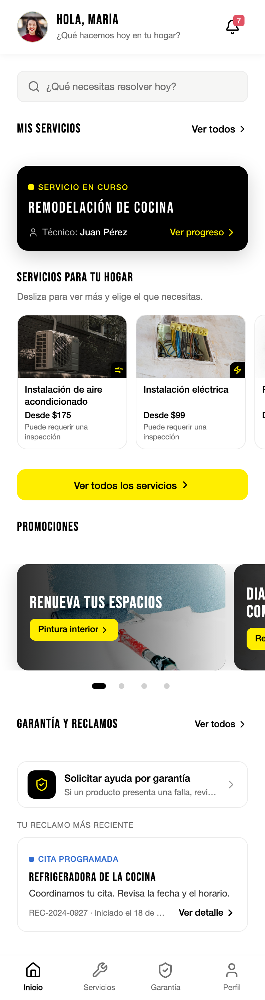
| # | Elemento | Tipo | Detalle |
|---|---|---|---|
| 1 | Avatar con la inicial | Círculo amarillo 48px | Inicial del nombre en Bebas |
| 2 | "HOLA, MARÍA" | Título | Bebas 24px, caja alta |
| 3 | "¿Qué hacemos hoy en tu hogar?" | Bajada | Helvetica 13px --gray-60 |
| 4 | Campana con contador | Botón | aria-label = "Notificaciones, 7 sin leer". Globo rojo con el número. Va a /notificaciones |
| 5 | "¿Qué necesitas resolver hoy?" | Buscador (botón) | BuscadorServicios. Abre /catalogo?enfocar=1 |
| 6 | "MIS SERVICIOS" + "Ver todos" | Encabezado de sección | Ver todos solo con más de un servicio en curso; va a /proyectos |
| 7 | Card negra del servicio activo | AvisoProximaVisita prioridad alta |
Chip "SERVICIO EN CURSO" amarillo, nombre en Bebas 24px blanco, técnico y "Ver progreso" |
| 8 | "SERVICIOS PARA TU HOGAR" + bajada | Encabezado de sección | Bajada: "Desliza para ver más y elige el que necesitas." |
| 9 | Carrusel de servicios destacados | SeccionServicios |
Cards con foto, nombre (2 líneas), Desde $N y "Puede requerir una inspección" |
| 10 | "Ver todos los servicios" | Botón amarillo | Ancho completo, va a /catalogo |
| 11 | "PROMOCIONES" | Encabezado de sección | — |
| 12 | Carrusel de promociones | SeccionPromociones |
Banner negro con título en Bebas y botón amarillo con el servicio |
| 13 | Puntos del carrusel | Indicador | El activo es una barra alargada; los otros, puntos |
| 14 | "GARANTÍA Y RECLAMOS" + "Ver todos" | Encabezado de sección | Ver todos con más de un reclamo; va a /garantia |
| 15 | "Solicitar ayuda por garantía" | Fila tocable completa | Sello negro con escudo; subtítulo truncado a una línea |
| 16 | "TU RECLAMO MÁS RECIENTE" | Rótulo | Bebas, caja alta, --gray-40 |
| 17 | Card del reclamo | TarjetaReclamoCompacta |
Chip de estado, producto en Bebas, una línea de situación, referencia + "Ver detalle" |
| 18 | Tab bar | Navegación | Inicio activo |
Reglas de contenido y truncado
- El nombre del servicio destacado se corta a 2 líneas (
line-clamp-2); las cards del carrusel tienen alto fijo para que todas midan igual. - La fila de referencia del reclamo se trunca a una línea: en la captura se lee
REC-2024-0927 · Iniciado el 18 de …. - El subtítulo de "Solicitar ayuda por garantía" se trunca a una línea.
- El saludo usa solo el primer nombre.
Navegación. Campana lleva a /notificaciones. Buscador lleva a /catalogo?enfocar=1. Card de servicio lleva a /servicios/:id. "Ver todos" de servicios lleva a /proyectos. Card de catálogo lleva a /catalogo/:id. Promoción lleva al servicio asociado (lib/navegacion.ts). Fila de garantía lleva a /garantia/producto. Card de reclamo lleva a /reclamos/:id.
Estados
| Estado | Qué se ve |
|---|---|
| Cargando | Skeletons con la forma de cada sección |
| Error de una sección | BloqueError en esa sección; el resto del Home sigue |
| Sin servicios | La instancia de prioridad media muestra el vacío con "Explorar servicios" |
| Sin reclamos | La sección de garantía deja solo la fila de acceso |
| Sin notificaciones sin leer | La campana va sin globo |
Pendientes
- ⚠️ Pendiente de definición. Los servicios destacados son una lista fija en
src/app/data/catalogo.ts, no una selección de negocio. Hay que definir quién los elige y con qué criterio. - ⚠️ Pendiente de definición. El intervalo del carrusel de promociones es
INTERVALO_CARRUSEL_MS = 5000y está marcado como provisional ensrc/app/logic/promociones.ts.
6.2 Servicios (catálogo)
| Ruta | /catalogo |
| Archivo | src/app/pages/CatalogoServicios.tsx |
| Objetivo | Encontrar un servicio, por categoría o buscando |
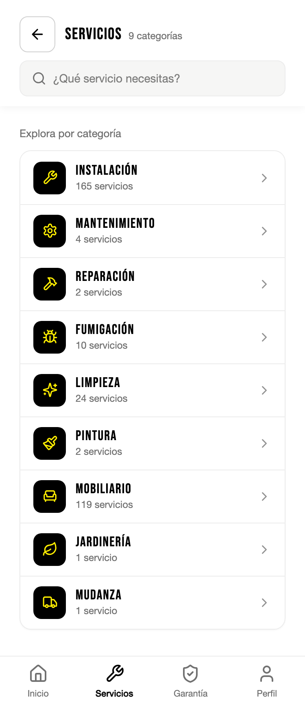
| # | Elemento | Tipo | Detalle |
|---|---|---|---|
| 1 | Botón de volver | Botón 44×44 | Radio 10, borde --gray-20 |
| 2 | "SERVICIOS" | Título | Bebas 20px |
| 3 | "9 categorías" | Contador | Helvetica 13px --gray-60, junto al título |
| 4 | "¿Qué servicio necesitas?" | Input de búsqueda | 44px, fondo --gray-3. Con ?enfocar=1 arranca enfocado |
| 5 | "Explora por categoría" | Rótulo | Helvetica 13–14px --gray-60 |
| 6–14 | Filas de categoría | Lista en una card | Sello negro 44px con ícono amarillo, nombre en Bebas, "N servicios", chevron |
| 15 | Tab bar | Navegación | Servicios activo |
Reglas de contenido y truncado
- Las filas están dentro de una sola card con divisores de 1px
--gray-8, no como cards separadas. - El contador de cada categoría se escribe en singular cuando es 1 ("1 servicio").
- Al escribir en el buscador, la lista de categorías se reemplaza por resultados en vivo.
Navegación. La fila de categoría abre la categoría dentro de la misma pantalla (estado interno). Resultado de búsqueda lleva a /catalogo/:id.
Estados: lista completa, categoría abierta, resultados de búsqueda, búsqueda sin resultados.
Pendientes
- ⚠️ Pendiente de definición. La categoría abierta no tiene ruta propia: no se puede compartir por link, no se entra directo desde una notificación y el botón de volver del navegador no sale de la categoría. Archivo:
src/app/pages/CatalogoServicios.tsx. - ⚠️ Pendiente de definición. Los conteos por categoría salen de los fixtures y son desparejos (165 en Instalación contra 1 en Jardinería). Falta el catálogo real.
6.3 Ficha del servicio
| Ruta | /catalogo/:id |
| Archivo | src/app/pages/DetalleCatalogo.tsx |
| Objetivo | Explicar qué incluye el servicio, cuánto cuesta y qué pasa después, antes de agendar |
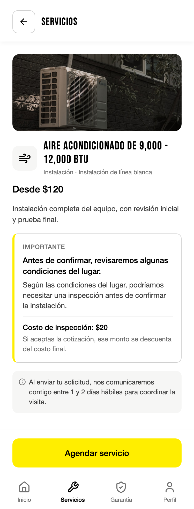
| # | Elemento | Tipo | Detalle |
|---|---|---|---|
| 1 | Volver + "SERVICIOS" | Header | Mismo header que el catálogo |
| 2 | Foto del servicio | Imagen | Radio 14, ancho completo. ImageWithFallback |
| 3 | Sello con el ícono de la categoría | Caja 48px | Fondo --gray-3, ícono 24px |
| 4 | "AIRE ACONDICIONADO DE 9,000 - 12,000 BTU" | Título | Bebas, 2 líneas cuando hace falta |
| 5 | "Instalación · Instalación de línea blanca" | Ruta de categoría | Helvetica 13px --gray-40 |
| 6 | "Desde $120" | Precio | Helvetica 20px |
| 7 | Descripción | Párrafo | Helvetica 14px/1.5 |
| 8 | Bloque "IMPORTANTE" | Card con acento | Borde izquierdo amarillo de 4px, radio 16, borde --gray-8 |
| 9 | "Antes de confirmar, revisaremos algunas condiciones del lugar." | Título del bloque | Helvetica 14px medium |
| 10 | Explicación de la inspección | Párrafo | avisoEvaluacion() en logic/catalogo.ts |
| 11 | "Costo de inspección: $20" + descuento | Bloque separado por hairline | La inspección no se suma al estimado |
| 12 | Aviso de contacto | Card --gray-3 radio 10 |
Ícono Info 14px + "Al enviar tu solicitud, nos comunicaremos contigo entre 1 y 2 días hábiles…" |
| 13 | "Agendar servicio" | CTA fijo al pie | Amarillo, ancho completo, sobre borde superior --gray-8 |
| 14 | Tab bar | Navegación | Servicios activo |
Reglas de contenido
- El precio siempre se presenta como
Desde $N(presentarPrecio()enlogic/catalogo.ts), con la unidad cuando existe (Desde $12 por m²). - El aviso de inspección lo decide una sola función,
avisoEvaluacion(): no se escribe a mano por servicio. - El costo de inspección va aparte del estimado, con la aclaración de que se descuenta si se acepta la cotización.
Navegación. "Agendar servicio" lleva a /catalogo/:id/revisar-lugar cuando el servicio necesita revisión del lugar; si no, /catalogo/:id/configurar.
Estados: con y sin inspección, precio cotizable (sin monto), servicio no encontrado (mensaje + vuelta).
Pendientes
- ⚠️ Pendiente de definición. Las fotos son de Unsplash, de demostración. Falta el set real del PIM, y con él la decisión de proporción y recorte. Archivo:
src/app/data/catalogo.ts.
6.4 Agendar · Paso 1 · Configura el servicio
| Ruta | /catalogo/:id/configurar |
| Archivo | src/app/pages/ConfigurarServicio.tsx |
| Objetivo | Definir cuántas unidades y sumar contexto opcional (fotos y notas) |
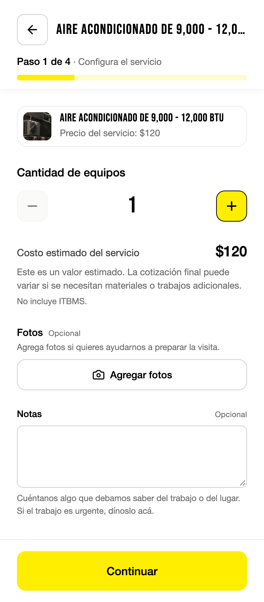
| # | Elemento | Tipo | Detalle |
|---|---|---|---|
| 1 | Volver + nombre del servicio | EncabezadoFlujo |
Título truncate: "AIRE ACONDICIONADO …" |
| 2 | "Paso 1 de 4 · Configura el servicio" | Indicador de paso | 14px medium + 13px gris |
| 3 | Barra de progreso | ui/progress |
25% en este paso |
| 4 | Card del servicio | Resumen | Miniatura, nombre en Bebas, "Precio del servicio: $120" |
| 5 | "Cantidad de equipos" | Título de bloque | Helvetica 16px medium |
| 6 | Contador | − / número / + | El + es amarillo; el − gris y se deshabilita en 1. Número en Bebas |
| 7 | "Costo estimado del servicio" + monto | Fila de total | DesgloseCosto. Monto a 20px peso 700 |
| 8 | Aclaración del estimado | Párrafo | "Este es un valor estimado. La cotización final puede variar…" |
| 9 | "No incluye ITBMS." | Nota | Helvetica 12px --gray-60 |
| 10 | "Fotos" + Opcional |
Label con marca | MarcaCampo |
| 11 | "Agregar fotos" | Botón con borde | Ícono Camera |
| 12 | "Notas" + Opcional |
Label con marca | MarcaCampo |
| 13 | Área de texto | Textarea | Redimensionable, radio 8 |
| 14 | Ayuda de las notas | Párrafo | "Cuéntanos algo que debamos saber del trabajo o del lugar. Si el trabajo es urgente, dínoslo acá." |
| 15 | "Continuar" | CTA fijo al pie | Amarillo |
Sin tab bar (ruta del flujo).
Navegación. "Continuar" lleva a /catalogo/:id/direccion. Volver lleva a la etapa anterior; el borrador persiste.
Estados: cantidad en 1 (menos deshabilitado), con adicional de desinstalación (aparece su fila en el desglose), servicio cotizable (sin monto).
Pendientes
- ⚠️ Pendiente de definición. "Agregar fotos" no abre selector de archivos: el prototipo no sube imágenes. Falta definir cantidad máxima, peso y formatos.
- ⚠️ Pendiente de definición. Las notas no tienen límite de caracteres: quedó sin definir por decisión expresa. Hay que fijarlo antes de producción.
6.5 Agendar · Paso 3 · Fecha preferida
| Ruta | /catalogo/:id/fecha |
| Archivo | src/app/pages/FechaServicio.tsx |
| Objetivo | Elegir día y franja preferidos, sabiendo que MiPRO confirma después |
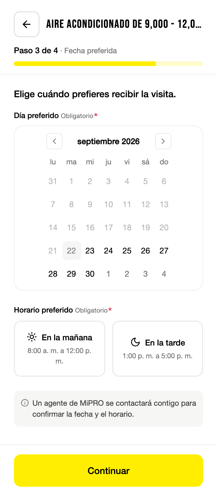
| # | Elemento | Tipo | Detalle |
|---|---|---|---|
| 1 | EncabezadoFlujo |
Header | "Paso 3 de 4 · Fecha preferida", barra al 75% |
| 2 | "Elige cuándo prefieres recibir la visita." | Título | Helvetica 16px medium |
| 3 | "Día preferido" + Obligatorio* |
Label con marca | MarcaCampo |
| 4 | Calendario | ui/calendar |
Card radio 12, borde --gray-8. Mes con flechas ‹ › |
| 5 | Días anteriores a mañana | Deshabilitados | disabled={{ before: mañana }}: hoy no es elegible |
| 6 | "Horario preferido" + Obligatorio* |
Label con marca | — |
| 7 | "En la mañana" / "En la tarde" | Dos tarjetas de opción | Íconos Sun y Moon; franjas "8:00 a. m. a 12:00 p. m." y "1:00 p. m. a 5:00 p. m." |
| 8 | Aviso | Card --gray-3 |
"Un agente de MiPRO se contactará contigo para confirmar la fecha y el horario." |
| 9 | "Continuar" | CTA fijo al pie | Amarillo |
Reglas de contenido. Las horas se escriben con el formato de Panamá: 8:00 a. m., con espacios finos y punto. La semana empieza en lunes y los nombres de día van en minúscula y abreviados a dos letras.
Navegación. "Continuar" lleva a /catalogo/:id/resumen.
Estados: sin elegir (el CTA valida al tocarlo y muestra el error), día elegido, franja elegida, ambos elegidos.
6.6 Agendar · Paso 4 · Revisa y confirma
| Ruta | /catalogo/:id/resumen |
| Archivo | src/app/pages/ResumenServicio.tsx |
| Objetivo | Revisar todo antes de confirmar, con acceso directo a corregir cada bloque |
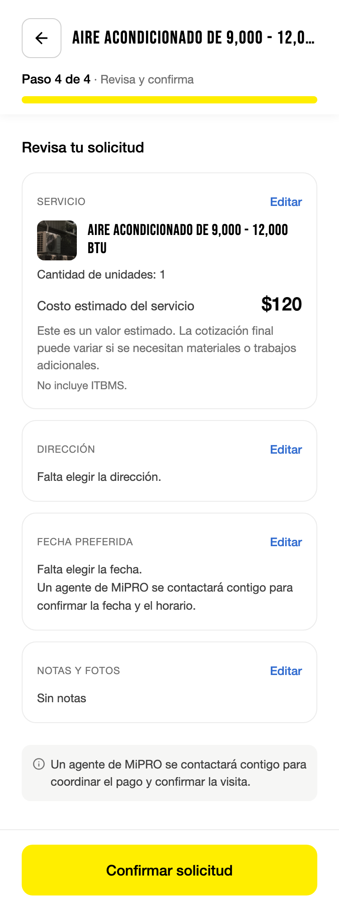
| # | Elemento | Tipo | Detalle |
|---|---|---|---|
| 1 | EncabezadoFlujo |
Header | "Paso 4 de 4 · Revisa y confirma", barra al 100% |
| 2 | "Revisa tu solicitud" | Título | Helvetica 16px medium |
| 3 | Bloque "SERVICIO" + "Editar" | Card | Rótulo en --gray-40 caja alta; "Editar" en --info-blue |
| 4 | Contenido del servicio | Miniatura + nombre + "Cantidad de unidades: N" + desglose | DesgloseCosto |
| 5 | Bloque "DIRECCIÓN" + "Editar" | Card | — |
| 6 | Bloque "FECHA PREFERIDA" + "Editar" | Card | Incluye el aviso de confirmación |
| 7 | Bloque "NOTAS Y FOTOS" + "Editar" | Card | "Sin notas" cuando está vacío |
| 8 | Aviso de pago | Card --gray-3 radio 10 |
"Un agente de MiPRO se contactará contigo para coordinar el pago y confirmar la visita." |
| 9 | "Confirmar solicitud" | CTA fijo al pie | 56px de alto, radio 12, texto 16px |
Reglas de contenido
- Cada bloque que falta se escribe en primera persona del plural y en positivo:
"Falta elegir la dirección.","Falta elegir la fecha.". - El pago se coordina fuera de la app: no hay pasarela ni monto a pagar acá.
Patrón de validación de toda la app. El CTA siempre está activo. Al tocarlo se valida y, si falta algo, aparece un error con role="alert" debajo del contenido: "Revisa que la dirección y la fecha estén completas antes de confirmar.". No se usan botones deshabilitados por formulario incompleto; disabled se reserva para el envío en curso.
Navegación. "Editar" de cada bloque lleva a la etapa correspondiente. "Confirmar solicitud" lleva a /solicitud-enviada?id=<id> con replace: true, así el botón de volver no regresa al formulario.
Estados: completo, incompleto (con el error), enviando.
6.7 Solicitud enviada
| Ruta | /solicitud-enviada?id=<id> |
| Archivo | src/app/pages/SolicitudEnviada.tsx |
| Objetivo | Confirmar que la solicitud llegó y dejar claro qué sigue |
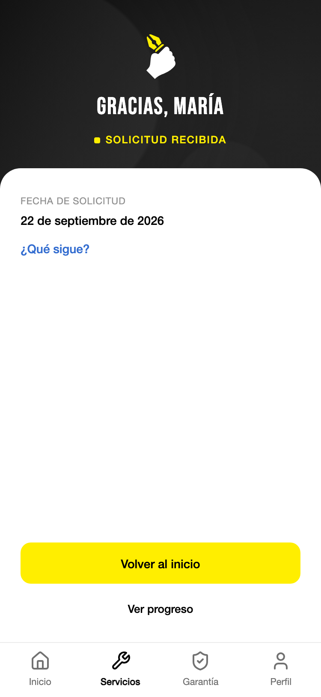
| # | Elemento | Tipo | Detalle |
|---|---|---|---|
| 1 | Bloque oscuro superior | Fondo con gradiente | Ocupa el tercio superior; la hoja blanca de abajo tiene radio arriba |
| 2 | Isotipo de MiPRO | ManoMiPRO |
Palma blanca, rayos amarillos. Nunca oscuro |
| 3 | "GRACIAS, MARÍA" | Título | Bebas, blanco, caja alta |
| 4 | "SOLICITUD RECIBIDA" | Chip de estado | Amarillo con punto |
| 5 | "FECHA DE SOLICITUD" | Rótulo | --gray-40, caja alta |
| 6 | "22 de septiembre de 2026" | Dato | Helvetica 16px medium |
| 7 | "¿Qué sigue?" | Enlace | --info-blue; abre la explicación |
| 8 | "Volver al inicio" | CTA amarillo | — |
| 9 | "Ver progreso" | Acción secundaria | Va al detalle del servicio creado, o a /proyectos |
| 10 | Tab bar | Navegación | Servicios activo |
Navegación. "Volver al inicio" lleva a /. "Ver progreso" lleva a /servicios/:id con replace: true.
6.8 Mis servicios
| Ruta | /proyectos |
| Archivo | src/app/pages/ProyectosList.tsx |
| Objetivo | Ver todos los servicios, en curso y finalizados |
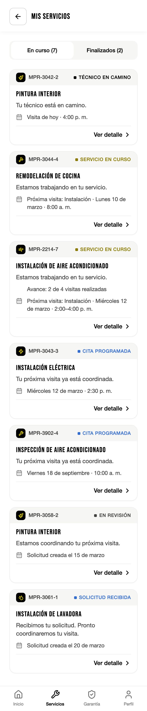
| # | Elemento | Tipo | Detalle |
|---|---|---|---|
| 1 | Volver + "MIS SERVICIOS" | Header | — |
| 2 | "En curso (7)" / "Finalizados (2)" | ui/tabs |
Dos pestañas con el conteo. Fondo --gray-3, pestaña activa blanca |
| 3–9 | Cards de servicio | TarjetaServicio |
Una por servicio |
| 10 | Tab bar | Navegación | Servicios activo |
Anatomía de la card (igual para todos los estados, solo cambian chip, frase y metadatos):
| Zona | Contenido |
|---|---|
| Cabecera | Sello negro con el ícono del servicio + número de reserva (MPR-3042-2) a la izquierda; chip de estado a la derecha |
| Cuerpo | Nombre en Bebas + una frase de situación |
| Metadatos | Avance ("2 de 4 visitas realizadas") cuando el plan está confirmado; fecha con ícono CalendarDays |
| Pie | "Ver detalle" con chevron, sobre hairline |
Los siete estados y su frase
| Chip | Color del chip | Frase |
|---|---|---|
| SOLICITUD RECIBIDA | --info-blue |
"Recibimos tu solicitud. Pronto coordinaremos tu visita." |
| EN REVISIÓN | --gray-80 |
"Estamos coordinando tu próxima visita." |
| CITA PROGRAMADA | --info-blue |
"Tu próxima visita ya está coordinada." |
| TÉCNICO EN CAMINO | --primary-black |
"Tu técnico está en camino." |
| SERVICIO EN CURSO | #8A7A00 |
"Estamos trabajando en tu servicio." |
| SERVICIO FINALIZADO | --success-green |
Cierre con su fecha |
| SOLICITUD CANCELADA | --error-red |
Cierre con su fecha |
Reglas de contenido
- La fecha de hoy se escribe
"Visita de hoy · 4:00 p. m."; las otras,"Miércoles 12 de marzo · 2:00–4:00 p. m."(rango con guion corto). - Sin fecha coordinada se muestra
"Solicitud creada el 15 de marzo". - El propósito de la visita sale de la nomenclatura controlada de backoffice (
TIPOS_VISITAenlogic/servicios.ts), nunca de texto libre del operador.
Estados: en curso, finalizados, vacío, cargando, error. Los escenarios de QA se fuerzan con ?servicios=error|cargando|vacio|encamino|proxima|porasignar.
Pendientes
- ⚠️ Pendiente de definición. "Próxima visita" aparece solo cuando el modelo confirma el plan (
totalVisitasConfirmado). Falta acordar con backoffice cuándo se considera confirmado. - ⚠️ Pendiente de definición. "Técnico en camino" existe en la app y en
statusConfig, pero el modelo actual no lo emite: se muestra solo desde un fixture.
6.9 Detalle del servicio
| Ruta | /servicios/:id |
| Archivo | src/app/pages/DetalleServicio.tsx |
| Objetivo | Ver el servicio completo con todas sus visitas y qué hacer si algo cambia |
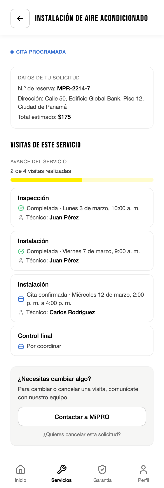
| # | Elemento | Tipo | Detalle |
|---|---|---|---|
| 1 | Volver + nombre del servicio | Header | Bebas 20px, truncate |
| 2 | Chip de estado | Chip | Bajo el header, alineado a la izquierda |
| 3 | "DATOS DE TU SOLICITUD" | Card de datos | Rótulo en --gray-40 |
| 4 | "N.º de reserva: MPR-2214-7" | Dato | Etiqueta normal + valor en peso 500 |
| 5 | "Dirección: …" | Dato | Hasta 2 líneas |
| 6 | "Total estimado: $175" | Dato | — |
| 7 | "VISITAS DE ESTE SERVICIO" | Título de sección | Bebas 18px |
| 8 | "AVANCE DEL SERVICIO" + "2 de 4 visitas realizadas" | Bloque de avance | Rótulo --gray-40 + barra amarilla |
| 9–12 | Cards de visita | ListaCitasServicio |
Una por cita |
| 13 | "¿Necesitas cambiar algo?" | Card --gray-3 |
Con su explicación |
| 14 | "Contactar a MiPRO" | Botón con borde | Abre el drawer ContactarMiPRO |
| 15 | "¿Quieres cancelar esta solicitud?" | Enlace subrayado | Abre el mismo drawer con el mensaje de cancelación |
| 16 | Tab bar | Navegación | Servicios activo |
Card de visita. Título = propósito (Inspección, Instalación, Control final). Debajo, estado y después fecha: "Completada · Lunes 3 de marzo, 10:00 a. m.", con el ícono y el color del estado. Pie con "Técnico: Juan Pérez" cuando está asignado. Sin fecha: "Por coordinar".
Vocabulario de estados de cita. Uno solo, en src/app/logic/estadosCita.ts: Por coordinar, Cita confirmada, En curso, Completada, Cancelada. El recorrido son los primeros cuatro (sin Cancelada). normalizarEstadoCita mapea los nombres viejos del backoffice.
Estados: con y sin avance confirmado, servicio finalizado (aparece CalificacionServicio), cancelado, no encontrado ("No encontramos este servicio." + "Volver a Mis servicios").
Pendientes
- ⚠️ Inconsistencia detectada.
"En pausa"existe enstatusConfig.tspero no está mapeado enEQUIVALENCIASdeestadosCita.ts, porque no está definido a qué estado del cliente corresponde. Si el backoffice lo emite, la cita cae en el genérico. Archivos:src/app/logic/estadosCita.ts,src/app/utils/statusConfig.ts. - ⚠️ Pendiente de definición. Cancelar no cancela la solicitud: abre el canal de contacto. Falta definir si la cancelación va a ser autogestionada.
6.10 Garantía y reclamos (hub)
| Ruta | /garantia |
| Archivo | src/app/pages/GarantiaHub.tsx |
| Objetivo | Iniciar una solicitud de garantía y seguir las que ya existen |
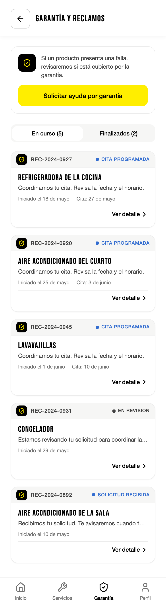
| # | Elemento | Tipo | Detalle |
|---|---|---|---|
| 1 | Volver + "GARANTÍA Y RECLAMOS" | Header | — |
| 2 | Card de inicio | Card blanca radio 14 | Sello negro con escudo + explicación de dos líneas |
| 3 | "Solicitar ayuda por garantía" | CTA amarillo | Dentro de la card, ancho completo |
| 4 | "En curso (5)" / "Finalizados (2)" | ui/tabs |
Con conteo |
| 5–9 | Cards de reclamo | TarjetaReclamoHub |
Una por caso |
| 10 | Tab bar | Navegación | Garantía activo |
Anatomía de la card de reclamo
| Zona | Contenido |
|---|---|
| Cabecera | Fondo --gray-3: sello negro con escudo + número de caso (REC-2024-0927); chip de estado a la derecha |
| Cuerpo | Producto en Bebas (1 línea, truncado) + una frase de situación |
| Metadatos | "Iniciado el 18 de mayo" y, cuando existe, "Cita: 27 de mayo" |
| Pie | "Ver detalle" con chevron, sobre hairline. Botón amarillo solo cuando el usuario debe actuar |
Los cinco estados de caso (ESTADOS_CASO_RECLAMO en logic/reclamos.ts): Solicitud recibida, En revisión, Cita programada, Necesitamos información, Finalizado / No cubierto.
Reglas de contenido y truncado
- El nombre del producto se corta a una línea: en la captura,
REFRIGERADORA DE LA CO…. - La frase de situación se corta a una línea:
Estamos revisando tu solicitud para coordinar la…. - Las filas tienen alto fijo: todas las cards del listado miden lo mismo.
⚠️ Inconsistencia detectada. TarjetaReclamo (en /reclamos) muestra el producto sin truncar y TarjetaReclamoHub lo trunca a una línea. El mismo dato se corta distinto según la pantalla. Archivos: components/reclamos/TarjetaReclamo.tsx, components/reclamos/TarjetaReclamoHub.tsx.
Navegación. CTA lleva a /garantia/producto. Card lleva a /reclamos/:id.
6.11 Garantía · Paso 1 · Datos de la compra y del producto
| Ruta | /garantia/producto |
| Archivo | src/app/pages/GarantiaProducto.tsx |
| Objetivo | Reunir lo que define la cobertura: comprobante y producto |
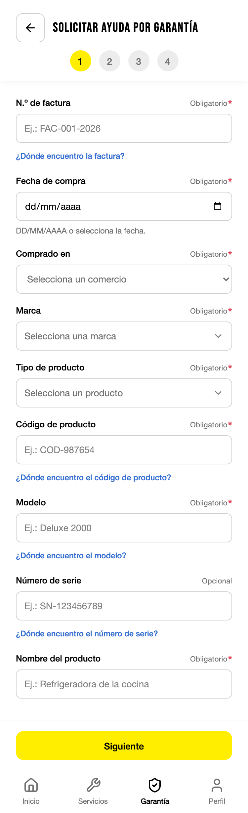
| # | Elemento | Marca | Control | Ayuda |
|---|---|---|---|---|
| 1 | "N.º de factura" | Obligatorio* |
Input, Ej.: FAC-001-2026 |
"¿Dónde encuentro la factura?" |
| 2 | "Fecha de compra" | Obligatorio* |
Input de fecha nativo (dd/mm/aaaa + ícono) |
"DD/MM/AAAA o selecciona la fecha." |
| 3 | "Comprado en" | Obligatorio* |
SelectorBuscable, "Selecciona un comercio" |
— |
| 4 | "Marca" | Obligatorio* |
SelectorBuscable, "Selecciona una marca" |
— |
| 5 | "Tipo de producto" | Obligatorio* |
SelectorBuscable, "Selecciona un producto" |
— |
| 6 | "Código de producto" | Obligatorio* |
Input, Ej.: COD-987654 |
"¿Dónde encuentro el código de producto?" |
| 7 | "Modelo" | Obligatorio* |
Input, Ej.: Deluxe 2000 |
"¿Dónde encuentro el modelo?" |
| 8 | "Número de serie" | Opcional |
Input, Ej.: SN-123456789 |
"¿Dónde encuentro el número de serie?" |
| 9 | "Nombre del producto" | Obligatorio* |
Input, Ej.: Refrigeradora de la cocina |
— |
| 10 | "Siguiente" | — | CTA amarillo fijo al pie | — |
Arriba, ProgresoPasos con el 1 activo. Header con el título SOLICITAR AYUDA POR … truncado.
Reglas de contenido
- El orden de los campos es este: "Marca" va entre "Comprado en" y "Tipo de producto".
- "Número de serie" es el único opcional del formulario: es el dato más difícil de encontrar, porque la etiqueta es chica y a veces está detrás del equipo. El resto define la cobertura y la app no tiene cómo pedirlo después del envío.
- Si el producto se elige de los registrados, no se vuelve a pedir ningún dato.
- Los enlaces "¿Dónde encuentro…?" abren un
AyudaSheetcon elDiagramaRecibo: el mismo comprobante simulado, resaltando factura o código según el caso. La ayuda nunca dice que falta contenido. - Los mensajes de error están en lenguaje claro, nunca "campo inválido":
"Elige un producto o ingresa sus datos para continuar."
Navegación. "Siguiente" lleva a /garantia/problema.
Pendientes
- ⚠️ Pendiente de definición. Las listas de comercios, marcas y tipos de producto son locales (
src/app/data/). Falta la fuente real.
6.12 Garantía · Paso 2 · Problema reportado
| Ruta | /garantia/problema |
| Archivo | src/app/pages/GarantiaProblema.tsx |
| Objetivo | Clasificar la falla con una taxonomía cerrada |
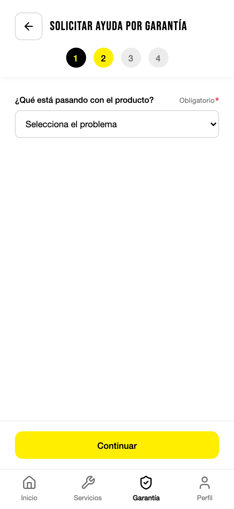
| # | Elemento | Tipo | Detalle |
|---|---|---|---|
| 1 | ProgresoPasos |
Indicador | 1 completado (negro), 2 activo (amarillo), 3 y 4 pendientes |
| 2 | "¿Qué está pasando con el producto?" | Label + Obligatorio* |
— |
| 3 | "Selecciona el problema" | Selector | 7 categorías |
| 4 | "Continuar" | CTA amarillo fijo al pie | — |
Las siete categorías (CATEGORIAS_PROBLEMA en logic/solicitudGarantia.ts): No enciende, No funciona correctamente, Hace un ruido extraño, Pierde agua, Muestra un error, Está dañado, Otro problema.
Aviso de seguridad. Una categoría puede traer un aviso preventivo aprobado, que aparece al elegirla. Hoy solo lo tiene "Pierde agua": "Por seguridad, desconecta el producto y no intentes repararlo por tu cuenta."
Estados: sin elegir (como en la captura), elegida, elegida con aviso de seguridad, "Otro problema" (habilita la descripción libre).
Pendientes
- ⚠️ Pendiente de definición. La taxonomía es una propuesta, no la lista productiva. Está marcada así en el código y hay que validarla con operaciones.
6.13 Garantía · Paso 3 · Contacto y dirección
| Ruta | /garantia/revisar |
| Archivo | src/app/pages/GarantiaRevisar.tsx |
| Objetivo | Confirmar a quién se contacta y dónde está el producto |
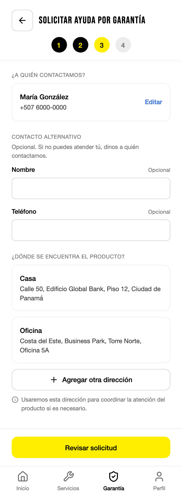
| # | Elemento | Tipo | Detalle |
|---|---|---|---|
| 1 | ProgresoPasos |
Indicador | 3 activo |
| 2 | "¿A QUIÉN CONTACTAMOS?" | Rótulo de sección | --gray-40, caja alta |
| 3 | Card del titular | Card | "María González" + "+507 6000-0000" + "Editar" en --info-blue |
| 4 | "CONTACTO ALTERNATIVO" | Rótulo de sección | Con su explicación: "Opcional. Si no puedes atender tú, dinos a quién contactamos." |
| 5 | "Nombre" | Label + Opcional |
Input |
| 6 | "Teléfono" | Label + Opcional |
Input |
| 7 | "¿DÓNDE SE ENCUENTRA EL PRODUCTO?" | Rótulo de sección | — |
| 8 | Direcciones guardadas | Cards seleccionables | Alias en peso 500 + dirección completa hasta 2 líneas |
| 9 | "Agregar otra dirección" | Botón con borde | Ícono + |
| 10 | Aviso | Card --gray-3 |
"Usaremos esta dirección para coordinar la atención del producto si es necesario." |
| 11 | "Revisar solicitud" | CTA amarillo fijo al pie | — |
Reglas de contenido. El contacto alternativo es el único bloque opcional del flujo: marca Opcional en los dos campos.
Navegación. "Editar" abre los datos del titular. "Agregar otra dirección" lleva a /garantia/direccion/nueva. "Revisar solicitud" lleva a /garantia/confirmar.
6.14 Garantía · Paso 4 · Revisar y enviar
| Ruta | /garantia/confirmar |
| Archivo | src/app/pages/GarantiaConfirmar.tsx |
| Objetivo | Revisión final, con acceso a corregir cada bloque |
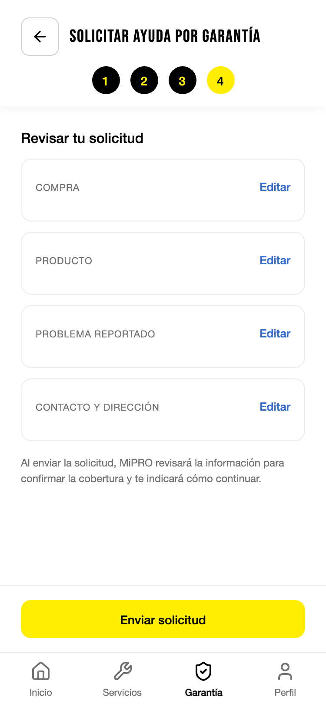
| # | Elemento | Tipo | Detalle |
|---|---|---|---|
| 1 | ProgresoPasos |
Indicador | 1-2-3 completados, 4 activo |
| 2 | "Revisar tu solicitud" | Título | Helvetica 16px medium |
| 3 | Bloque "COMPRA" + "Editar" | Card | Factura y fecha |
| 4 | Bloque "PRODUCTO" + "Editar" | Card | Marca, tipo, modelo, código, serie |
| 5 | Bloque "PROBLEMA REPORTADO" + "Editar" | Card | Categoría y descripción |
| 6 | Bloque "CONTACTO Y DIRECCIÓN" + "Editar" | Card | Titular, alternativo y dirección |
| 7 | Nota de cierre | Párrafo | "Al enviar la solicitud, MiPRO revisará la información para confirmar la cobertura y te indicará cómo continuar." |
| 8 | "Enviar solicitud" | CTA amarillo fijo al pie | disabled mientras envía |
En la captura los cuatro bloques salen sin datos porque se entró por URL directa, sin borrador. Con el flujo recorrido, cada bloque muestra sus valores.
Navegación. "Enviar solicitud" lleva a /garantia/enviada. Desde ahí, al caso creado (/reclamos/:id) o al listado.
Estados: completo, enviando (CTA deshabilitado), error de envío.
6.15 Agregar dirección
| Rutas | /garantia/direccion/nueva y /catalogo/:id/direccion/nueva |
| Archivos | pages/GarantiaAgregarDireccion.tsx, pages/AgregarDireccion.tsx, components/agendar/FormularioDireccion.tsx |
| Objetivo | Dar de alta una dirección completa, una sola vez y de una sola forma |
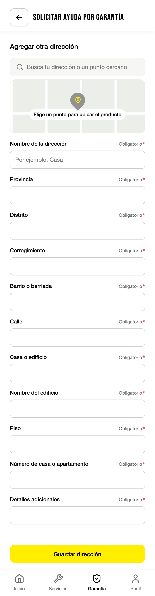
| # | Elemento | Marca | Detalle |
|---|---|---|---|
| 1 | Título del bloque | — | "Agregar otra dirección" (garantía) o "Agregar dirección" (agendamiento) |
| 2 | "Busca tu dirección o un punto cercano" | — | Barra de búsqueda, 44px, fondo --gray-3 |
| 3 | Mapa | — | Recuadro de 130px radio 12 con un pin y el mensaje del contexto ("Elige un punto para ubicar el producto" / "…el servicio") |
| 4 | "Nombre de la dirección" | Obligatorio* |
Único campo con placeholder: "Por ejemplo, Casa" |
| 5 | "Provincia" | Obligatorio* |
Input de texto |
| 6 | "Distrito" | Obligatorio* |
Input de texto |
| 7 | "Corregimiento" | Obligatorio* |
Input de texto |
| 8 | "Barrio o barriada" | Obligatorio* |
Input de texto |
| 9 | "Calle" | Obligatorio* |
Input de texto |
| 10 | "Casa o edificio" | Obligatorio* |
Input de texto |
| 11 | "Nombre del edificio" | Obligatorio* |
Input de texto |
| 12 | "Piso" | Obligatorio* |
Input de texto |
| 13 | "Número de casa o apartamento" | Obligatorio* |
Input de texto |
| 14 | "Detalles adicionales" | Obligatorio* |
Input de texto |
| 15 | "Guardar dirección" | — | CTA amarillo fijo al pie, 44px |
Reglas de contenido
- Los once campos son obligatorios. Con un campo faltante, la dirección puede no alcanzar para llegar, y la app no tiene cómo pedirlo después.
- Elegir un lugar en el mapa autocompleta los campos que ese lugar conoce.
- La validación es
validarDireccionNueva: muestra el primer error faltante, conrole="alert". - Es un solo formulario para los dos flujos. Antes había dos (once campos en agendamiento, cuatro en garantía).
Navegación. Al guardar, vuelve al paso que lo abrió con la nueva dirección ya elegida (state: { direccionId }, replace: true). Volver sin guardar no toca el borrador.
Pendientes
- ⚠️ Inconsistencia detectada. Provincia, distrito y corregimiento son campos de texto libre, aunque la app ya tiene el componente
SelectorBuscabley datos geográficos endata/lugaresSimulados.ts. Escritos a mano no se pueden validar ni usar para asignar cobertura. Archivo:components/agendar/FormularioDireccion.tsx. - ⚠️ Pendiente de definición. "Detalles adicionales" es obligatorio y no tiene ayuda que explique qué se espera ahí.
- ⚠️ Pendiente de definición. El mapa es un dibujo. Falta el proveedor real.
6.16 Detalle del reclamo
| Ruta | /reclamos/:id |
| Archivo | src/app/pages/DetalleReclamo.tsx |
| Objetivo | Saber en qué está el caso y qué sigue |
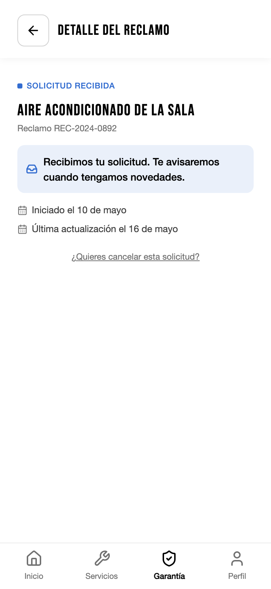
| # | Elemento | Tipo | Detalle |
|---|---|---|---|
| 1 | Volver + "DETALLE DEL RECLAMO" | Header | — |
| 2 | Chip de estado | Chip | "SOLICITUD RECIBIDA" en --info-blue |
| 3 | Nombre del producto | Título | Bebas, caja alta, sin truncar |
| 4 | "Reclamo REC-2024-0892" | Referencia | Helvetica 13px --gray-60 |
| 5 | Card de situación | Card tonal | Fondo tenue del color del estado + ícono + la frase en peso 500 |
| 6 | "Iniciado el 10 de mayo" | Metadato | Con ícono CalendarDays 14px |
| 7 | "Última actualización el 16 de mayo" | Metadato | Ídem |
| 8 | "¿Quieres cancelar esta solicitud?" | Enlace subrayado | Abre ContactarMiPRO |
| 9 | Tab bar | Navegación | Garantía activo |
Con cita coordinada se suma HistorialCitas: una card por cita con el tipo como título, los cambios de estado con su fecha (punto + conector vertical) y el pie con técnico y horario. El historial usa el del backoffice cuando existe; si no, lo deriva de los estados alcanzados (historialCita() en logic/reclamos.ts).
Modalidades de atención (ModalidadAtencion): taller-visita, cliente-lleva, deja-en-tienda. Cambian el texto de la cita, no la estructura.
Estados: los cinco de caso; con y sin historial; el caso que requiere acción muestra el CTA amarillo.
Pendientes
- ⚠️ Pendiente de definición. El catálogo de estados de caso es el de la app, no el del backoffice. Hay que cerrarlo y confirmar quién lo emite.
6.17 Notificaciones
| Ruta | /notificaciones |
| Archivo | src/app/pages/Notificaciones.tsx |
| Objetivo | Repasar las novedades en orden y saber qué queda sin leer |
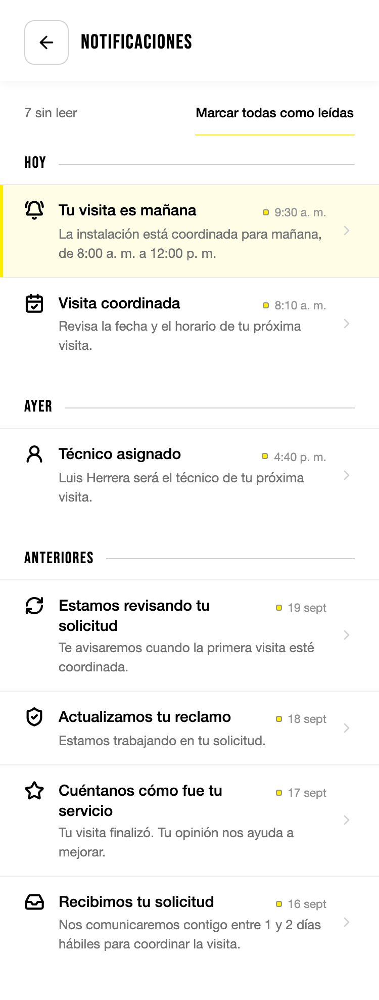
| # | Elemento | Tipo | Detalle |
|---|---|---|---|
| 1 | Volver + "NOTIFICACIONES" | Header | — |
| 2 | "7 sin leer" | Contador | Helvetica 13px --gray-60 |
| 3 | "Marcar todas como leídas" | Acción de texto | Negro peso 500 con subrayado amarillo de 2px. minHeight: 44px |
| 4 | "HOY" | Encabezado de fecha | Bebas 16px caja alta + hairline --gray-20 hasta el borde |
| 5 | Fila prioritaria | Fila | Superficie rgba(255,238,0,0.10) + barra inset 3px 0 0 amarilla |
| 6 | Filas sin leer | Fila | Ícono negro, título peso 500, punto amarillo de 6px junto a la hora |
| 7 | "AYER" / "ANTERIORES" | Encabezados de fecha | Ídem |
| 8 | Filas leídas | Fila | Ícono --gray-40, título --gray-80 peso 400, sin punto |
| 9 | Tab bar | No hay | /notificaciones está en RUTAS_SIN_TABBAR |
Anatomía de la fila. Grid de 22px 1fr 16px con gap 12 y padding 14px 24px; filas separadas por 1px solid var(--gray-8). No son cards: es un registro continuo. Columna 1 el ícono del tipo (20px, trazo 2.5), columna 2 título + mensaje, columna 3 el chevron.
Los siete tipos y su ícono
| Tipo | Ícono (lucide) |
|---|---|
| Solicitud recibida | Inbox |
| Técnico asignado | UserRound |
| Visita coordinada | CalendarCheck |
| Solicitud en revisión | RefreshCw |
| Recordatorio de visita | BellRing |
| Novedad de garantía | ShieldCheck |
| Pedido de calificación | Star |
Reglas de contenido y truncado
- Título y mensaje se cortan a 2 líneas cada uno (
line-clamp-2). - La hora del día se muestra en las de hoy y ayer (
9:30 a. m.); en las anteriores, la fecha corta (19 sept). - Los grupos de fecha van separados por 26px.
Jerarquía de la fila. Lo no leído se marca con el ícono negro, el título en peso 500 y el punto amarillo. La barra amarilla y la superficie tenue quedan reservadas para la fila prioritaria.
Estados: con novedades, todo leído, vacío (estado tipográfico, sin ilustración), cargando.
Pendientes
- ⚠️ Pendiente de definición. Las notificaciones son locales: no hay push ni persistencia. "Marcar todas como leídas" se pierde al recargar.
6.18 Mi perfil
| Ruta | /perfil |
| Archivo | src/app/pages/Perfil.tsx |
| Objetivo | Datos de la cuenta y accesos a configuración y soporte |
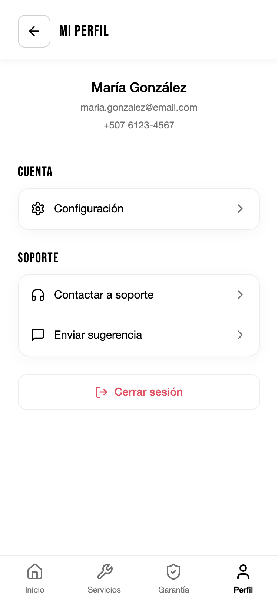
| # | Elemento | Tipo | Detalle |
|---|---|---|---|
| 1 | Volver + "MI PERFIL" | Header | — |
| 2 | "María González" | Nombre | Helvetica 20px peso 500, centrado |
| 3 | "maria.gonzalez@email.com" | Dato | --gray-60, centrado |
| 4 | "+507 6123-4567" | Dato | --gray-60, centrado |
| 5 | "CUENTA" | Rótulo de grupo | Bebas caja alta |
| 6 | "Configuración" | Fila con ícono Settings |
Card blanca radio 14, chevron |
| 7 | "SOPORTE" | Rótulo de grupo | — |
| 8 | "Contactar a soporte" | Fila con ícono Headphones |
— |
| 9 | "Enviar sugerencia" | Fila con ícono MessageSquare |
— |
| 10 | "Cerrar sesión" | Botón con borde | Texto e ícono LogOut en --error-red, centrado |
| 11 | Tab bar | Navegación | Perfil activo |
Navegación. /configuracion, /soporte, /sugerencias. "Cerrar sesión" pide confirmación y va a /welcome.
Pendientes
- ⚠️ Inconsistencia detectada. "Cerrar sesión" usa
--error-red(#E05263), no--destructive(#E2034D), que es el token de acción destructiva y no se usa en ninguna parte. Archivos:src/app/pages/Perfil.tsx,src/styles/theme.css. - ⚠️ Pendiente de definición. Desde Perfil no se llega a "Mis productos". Ver 6.21.
6.19 Configuración
| Ruta | /configuracion |
| Archivo | src/app/pages/Configuracion.tsx |
| Objetivo | Editar los datos de la cuenta |
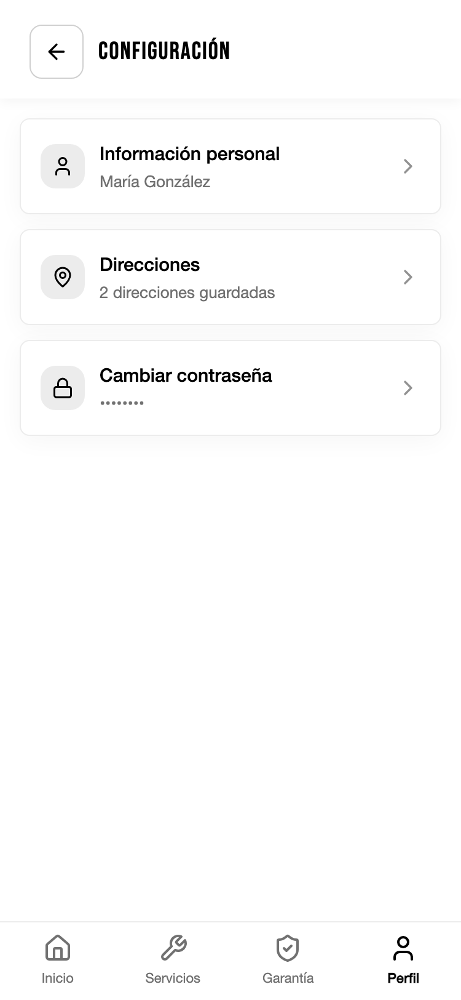
| # | Elemento | Tipo | Detalle |
|---|---|---|---|
| 1 | Volver + "CONFIGURACIÓN" | Header | — |
| 2 | "Información personal" | Fila con sello --gray-3 |
Subtítulo con el valor actual: "María González" |
| 3 | "Direcciones" | Fila | Subtítulo: "2 direcciones guardadas" |
| 4 | "Cambiar contraseña" | Fila | Subtítulo con puntos, sin revelar nada |
| 5 | Tab bar | Navegación | Perfil activo |
Cada fila es una card independiente (radio 14, borde --gray-8), a diferencia del catálogo, donde las filas viven dentro de una sola card.
Pendientes
- ⚠️ Pendiente de definición. No hay preferencias de notificación, ni idioma, ni datos de facturación. Falta definir si van en este nivel.
6.20 Enviar sugerencia
| Ruta | /sugerencias |
| Archivo | src/app/pages/Sugerencias.tsx |
| Objetivo | Recoger una calificación general y un comentario |
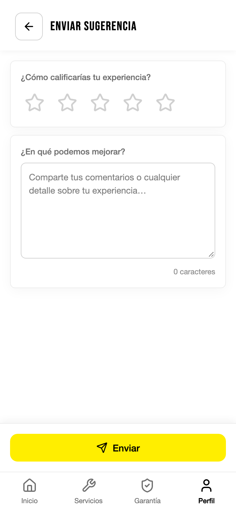
| # | Elemento | Tipo | Detalle |
|---|---|---|---|
| 1 | Volver + "ENVIAR SUGERENCIA" | Header | — |
| 2 | "¿Cómo calificarías tu experiencia?" | Pregunta en card | Helvetica 14px --gray-80 |
| 3 | Cinco estrellas | Radiogroup | aria-checked. Vacías en --gray-20; elegidas en --primary-yellow (contorno y relleno) |
| 4 | "¿En qué podemos mejorar?" | Pregunta en card | — |
| 5 | Área de texto | Textarea | Placeholder "Comparte tus comentarios o cualquier detalle sobre tu experiencia…" |
| 6 | "0 caracteres" | Contador | Alineado a la derecha, --gray-60 |
| 7 | "Enviar" | CTA amarillo fijo al pie | Con ícono Send |
Reglas de contenido. Las dos preguntas son obligatorias: la calificación ("Por favor califica tu experiencia.") y el comentario con al menos 10 caracteres ("Escribe al menos 10 caracteres.").
Pendientes
- ⚠️ Inconsistencia detectada. Los dos campos son obligatorios pero no llevan la marca
Obligatorio*, que sí se aplica en los flujos de servicio, garantía y producto. Lo mismo pasa en las cuatro pantallas de acceso (Welcome,Login,Signup,ForgotPassword). Archivos:src/app/pages/Sugerencias.tsx,src/app/pages/Login.tsx,src/app/pages/Signup.tsx,src/app/pages/ForgotPassword.tsx. - ⚠️ Pendiente de definición. El contador no tiene techo: el límite de caracteres sigue sin definir, por decisión expresa.
- ⚠️ Pendiente de definición. El envío no se guarda: no hay endpoint.
6.21 Mis productos
| Ruta | /productos (más /productos/agregar y /productos/:id) |
| Archivo | src/app/pages/Productos.tsx |
| Objetivo | Tener los productos registrados a mano para pedir garantía sin volver a cargar sus datos |
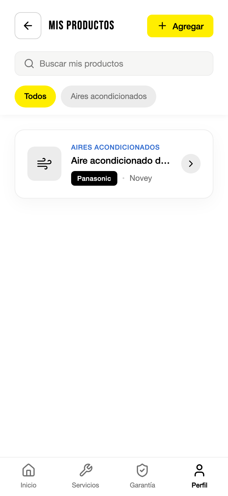
| # | Elemento | Tipo | Detalle |
|---|---|---|---|
| 1 | Volver + "MIS PRODU…" | Header | El título se trunca al convivir con el botón "Agregar" |
| 2 | "+ Agregar" | Botón amarillo en el header | Va a /productos/agregar |
| 3 | "Buscar mis productos" | Input de búsqueda | 44px, fondo --gray-3 |
| 4 | "Todos" / "Aires acondicionados" | Chips de filtro | Píldoras; la activa amarilla, las otras --gray-8 |
| 5 | Card de producto | Card radio 14 | Miniatura 72px, categoría en --info-blue caja alta, nombre truncado, chip negro con la marca + comercio, chevron en círculo |
| 6 | Tab bar | Navegación | Perfil activo |
Pendientes
- ⚠️ Inconsistencia detectada.
/productosno tiene ningún acceso en la interfaz: ni Perfil ni el Home ni Garantía llevan ahí. Solo se llega escribiendo la URL. Las tres rutas de productos están implementadas y quedan inalcanzables. Archivos:src/app/pages/Perfil.tsx,src/app/routes.tsx. - ⚠️ Inconsistencia detectada. Esta pantalla usa un lenguaje visual propio que no aparece en el resto de la app: chips con forma de píldora y categoría en azul (el azul está reservado para enlaces y seguimiento). Archivo:
src/app/pages/Productos.tsx. - ⚠️ Pendiente de definición. El título del header se trunca a "MIS PRODU…" por el botón "Agregar". Hay que decidir si el título se acorta o la acción se mueve.
7. Reglas funcionales visibles en la interfaz
Las reglas que se ven en pantalla. Cada una está implementada en un solo lugar del código.
7.1 Precio
| Regla | Dónde |
|---|---|
El precio siempre se presenta como Desde $N, nunca como monto cerrado |
presentarPrecio() en src/app/logic/catalogo.ts |
Con unidad, se suma al final: Desde $12 por m² |
ídem |
Sin precio cargado se usa PRECIO_BASE_REFERENCIAL_USD |
ídem |
El estimado es precio × cantidad más los adicionales con precio real (por ejemplo la desinstalación) |
totalEstimado(), totalConAdicionales() en logic/solicitudServicio.ts |
| La visita de evaluación no se suma al estimado: se muestra aparte, con la aclaración de que se descuenta de la cotización si se acepta | components/servicios/DesgloseCosto.tsx |
Siempre se aclara "No incluye ITBMS." |
DesgloseCosto |
| El pago se coordina fuera de la app: no hay pasarela | pages/ResumenServicio.tsx |
7.2 Inspección y evaluación
Una sola función decide si el servicio avisa que puede necesitar inspección: avisoEvaluacion() en src/app/logic/catalogo.ts. Considera tres flags del servicio: requiereInspeccion, inspeccionObligatoria y precioCotizable. El texto no se escribe a mano por servicio.
El costo de inspección es PRECIO_INSPECCION_USD (logic/solicitudServicio.ts) y siempre va acompañado de la regla del descuento.
7.3 Estados de cita
Un solo vocabulario, en src/app/logic/estadosCita.ts:
| Estado | En el recorrido | Notas |
|---|---|---|
| Por coordinar | sí | Sin fecha ni técnico |
| Cita confirmada | sí | Con fecha; el técnico puede faltar |
| En curso | sí | — |
| Completada | sí | Cierra el recorrido |
| Cancelada | no | Sale del recorrido |
normalizarEstadoCita()traduce los nombres viejos del backoffice con el mapaEQUIVALENCIAS.debeMostrarFecha()ydebeMostrarTecnico()deciden qué metadato aparece: no se muestra un dato vacío con un rótulo.estadosAlcanzados()arma el recorrido;claveVisualCita()da la clave parastatusConfig.- El orden de lectura es estado y después fecha:
"Cita confirmada · 12 de marzo".
⚠️ Pendiente de definición. "En pausa" no está en EQUIVALENCIAS: falta definir qué significa para el cliente.
7.4 Estados de caso de garantía
ESTADOS_CASO_RECLAMO en src/app/logic/reclamos.ts: Solicitud recibida, En revisión, Cita programada, Necesitamos información, Finalizado / No cubierto.
- El estado del caso nunca se escribe a mano en los fixtures: lo deriva
estadoGeneralReclamo()de las citas, la cancelación o la resolución. reclamoRequiereAccion()decide si aparece el botón amarillo: la acción destacada solo existe cuando el usuario tiene algo que hacer.citaRelevante()elige la cita más próxima entre las coordinadas.historialCita()usa el historial del backoffice cuando existe; si no, lo deriva de los estados alcanzados.
7.5 Campos obligatorios
| Regla | Detalle |
|---|---|
| Marca única | Obligatorio* con el asterisco pegado, en --error-red; los opcionales, Opcional sin asterisco |
| Dirección | Los once campos son obligatorios |
| Garantía paso 1 | Todo obligatorio menos "Número de serie" |
| Garantía paso 3 | El contacto alternativo es el único bloque opcional |
| Configurar servicio | Fotos y notas son opcionales |
| Producto ya registrado | No se vuelve a pedir ningún dato |
Validación al enviar, no botón deshabilitado. El CTA está siempre activo; al tocarlo se valida y aparece el primer error faltante con role="alert", en lenguaje claro ("Elige un producto o ingresa sus datos para continuar."), nunca "campo inválido". disabled se reserva para el envío en curso.
7.6 Borradores y persistencia
| Qué | Dónde | Vida |
|---|---|---|
| Borrador de solicitud de servicio | logic/solicitudServicio.ts |
sessionStorage |
| Borrador de solicitud de garantía | logic/solicitudGarantia.ts |
sessionStorage |
| Direcciones agregadas en la sesión | data/direcciones.ts |
sessionStorage |
| Reclamos creados en la sesión | data/reclamos.ts, clave mipro-reclamos-sesion |
sessionStorage |
| Calificaciones enviadas | data/calificaciones.ts |
sessionStorage |
Volver atrás no borra el borrador. Al recargar la pestaña se pierde todo: no hay backend.
7.7 Fechas y horas
src/app/logic/fechas.ts centraliza el formato:
| Función | Resultado |
|---|---|
formatearFecha |
18 de mayo |
formatearFechaHora |
Lunes 3 de marzo, 10:00 a. m. |
formatearFechaRango |
Miércoles 12 de marzo · 2:00–4:00 p. m. |
formatearFechaRangoCompacto |
Versión corta para cards |
formatearHora |
4:00 p. m. |
Convenciones: a. m. / p. m. con espacios y puntos (formato de Panamá), semana que empieza en lunes, días abreviados a dos letras y en minúscula, y "Visita de hoy" en lugar de la fecha cuando es hoy.
⚠️ Pendiente de definición. Conviven la fecha larga (22 de septiembre de 2026), la media (Lunes 3 de marzo) y la corta (19 sept). El criterio por contexto no está escrito.
7.8 Navegación y guardas
| Regla | Dónde |
|---|---|
| El tab activo se deriva de la ruta, no del click | logic/tabs.ts (seccionActiva) |
| Las rutas del agendamiento y notificaciones ocultan la barra | RUTAS_SIN_TABBAR en components/Layout.tsx |
Tras confirmar se navega con replace: true para que volver no regrese al formulario |
ResumenServicio, AgregarDireccion, GarantiaAgregarDireccion |
| Doble toque protegido con una ventana de 600 ms | Las tres cards de reclamo, SeccionServicios |
| El campo enfocado se vuelve a centrar cuando aparece el teclado | lib/campoVisibleConTeclado.ts (escucha visualViewport, reacciona a los 150 ms) |
| La apertura de promociones está centralizada | lib/navegacion.ts |
7.9 Contenido provisional
La app no muestra que falta contenido. Cuando una foto es de referencia o una descripción es provisional, los flags internos (imagenProvisional, descripcionProvisional en data/catalogo.ts) quedan como marca para el equipo y no se renderizan. En AyudaSheet pasa lo mismo: sin diagrama, la ayuda es solo texto, sin recuadro de "pendiente".
8. Inventario de contenido
8.1 Dónde vive el texto
El texto de interfaz está en dos lugares distintos:
| Fuente | Qué cubre |
|---|---|
src/app/i18n/strings.ts (STR) |
464 claves en 14 grupos. Home, catálogo, agendamiento, garantía, servicios, notificaciones, promociones, buscador |
src/app/i18n/estados.ts |
Presentación de estados: presentarEstadoServicio, presentarEstadoCasoReclamo, etiquetas y claves visuales |
| Texto escrito dentro del componente | Las 15 pantallas de la tabla de abajo |
Claves por grupo
| Grupo | Claves | Cubre |
|---|---|---|
garantiaFlujo |
108 | Los cuatro pasos de la solicitud de garantía |
servicios |
81 | Mis servicios y el detalle |
agendar |
67 | Las cuatro etapas del agendamiento |
garantia |
49 | Hub y reclamos |
lugar |
41 | Cuestionario de revisión del lugar |
catalogo |
34 | Catálogo y ficha |
solicitud |
23 | Confirmación de solicitud |
serviciosHogar |
12 | Sección de destacados del Home |
avisoCita |
11 | Card de servicio activo del Home |
notificaciones |
11 | Bandeja |
misCitas |
10 | Resumen de citas |
promociones |
8 | Carrusel |
buscador |
5 | Acceso a la búsqueda |
home |
4 | Saludo y encabezados |
⚠️ Inconsistencia detectada. Estas 15 pantallas no usan STR: tienen el texto escrito adentro. Un cambio de copy se hace en dos lugares distintos según la pantalla.
AgregarProducto, Configuracion, EmptyHome, ForgotPassword, Login, NotFound, Perfil, ProductoDetalle, Productos, ProyectoDetalle, ReclamoGarantia, Signup, Soporte, Sugerencias, Welcome
El texto legal completo (Términos y Privacidad) está embebido en components/LegalSheet.tsx.
8.2 Textos clave y su regla
| Texto | Dónde aparece | Regla |
|---|---|---|
Hola, <nombre> |
Home, confirmaciones | Solo el primer nombre |
¿Qué hacemos hoy en tu hogar? |
Home | Bajada del saludo |
¿Qué necesitas resolver hoy? |
Buscador del Home | Es un botón, no un input |
¿Qué servicio necesitas? |
Catálogo | Placeholder del buscador real |
Desde $N |
Todo el catálogo | Nunca monto cerrado |
Puede requerir una inspección |
Cards y ficha | Lo decide avisoEvaluacion() |
Costo de inspección: $N + Si aceptas la cotización, ese monto se descuenta del costo final. |
Ficha, desglose | La inspección va aparte del estimado |
Este es un valor estimado. La cotización final puede variar si se necesitan materiales o trabajos adicionales. |
Configurar, resumen | Acompaña siempre al total |
No incluye ITBMS. |
Configurar, resumen | — |
Al enviar tu solicitud, nos comunicaremos contigo entre 1 y 2 días hábiles para coordinar la visita. |
Ficha, notificaciones | Plazo único |
Un agente de MiPRO se contactará contigo para confirmar la fecha y el horario. |
Fecha, resumen | La app no confirma la cita |
Un agente de MiPRO se contactará contigo para coordinar el pago y confirmar la visita. |
Resumen | El pago es fuera de la app |
Obligatorio* / Opcional |
Todos los formularios de los flujos | Marca única, ver 7.5 |
Falta elegir la dirección. / Falta elegir la fecha. |
Resumen | En positivo, en primera persona del plural |
Revisa que la dirección y la fecha estén completas antes de confirmar. |
Resumen | Error al confirmar |
Elige un producto o ingresa sus datos para continuar. |
Garantía paso 1 | Lenguaje claro, nunca "campo inválido" |
Por seguridad, desconecta el producto y no intentes repararlo por tu cuenta. |
Garantía paso 2 | Único aviso de seguridad aprobado, en "Pierde agua" |
Al enviar la solicitud, MiPRO revisará la información para confirmar la cobertura y te indicará cómo continuar. |
Garantía paso 4 | No promete cobertura |
Si un producto presenta una falla, revisaremos si está cubierto por la garantía. |
Home, hub | No promete cobertura |
¿Dónde encuentro la factura? / el código de producto / el modelo / el número de serie |
Garantía paso 1 | Abren AyudaSheet |
Recibimos tu solicitud. Pronto coordinaremos tu visita. |
Card de servicio | Estado Solicitud recibida |
Estamos coordinando tu próxima visita. |
Card de servicio | En revisión |
Tu próxima visita ya está coordinada. |
Card de servicio | Cita programada |
Tu técnico está en camino. |
Card de servicio | Técnico en camino |
Estamos trabajando en tu servicio. |
Card de servicio | Servicio en curso |
Coordinamos tu cita. Revisa la fecha y el horario. |
Card de reclamo | Cita programada |
Estamos revisando tu solicitud para coordinar la atención. |
Card de reclamo | En revisión |
Recibimos tu solicitud. Te avisaremos cuando tengamos novedades. |
Card y detalle de reclamo | Solicitud recibida |
¿Necesitas cambiar algo? + Para cambiar o cancelar una visita, comunícate con nuestro equipo. |
Detalle del servicio | Cancelar abre el canal de contacto |
¿Quieres cancelar esta solicitud? |
Detalle de servicio y de reclamo | Enlace, no botón destructivo |
Marcar todas como leídas |
Notificaciones | Acción de texto con subrayado amarillo |
No encontramos este servicio. + Volver a Mis servicios |
Detalle del servicio | Vacío por id inexistente |
Algo salió mal + La aplicación encontró un error inesperado. + Recargar aplicación |
App.tsx |
Único texto de la app en el ErrorBoundary, fuera de STR |
8.3 Vocabulario
| Se dice | No se dice |
|---|---|
| cita | turno, appointment |
| visita | ídem |
| servicio | proyecto (aunque la ruta se llame /proyectos) |
| reclamo / caso | ticket |
| solicitud | orden, pedido |
| técnico | operario, handyman |
| Obligatorio* | requerido, required |
⚠️ Inconsistencia detectada. La ruta /proyectos y los archivos ProyectosList.tsx / ProyectoDetalle.tsx conservan el nombre "proyecto", que la interfaz ya no usa: en pantalla dice "Mis servicios". Archivos: src/app/routes.tsx, src/app/pages/ProyectosList.tsx.
⚠️ Pendiente de definición. "visita" y "cita" se usan como sinónimos parciales: la card dice "Próxima visita" y el detalle titula "Visitas de este servicio", mientras el estado dice "Cita confirmada". Hay que elegir una.
9. Responsive y dispositivos
9.1 El shell tiene dos modos
Definidos en src/app/App.tsx y src/styles/index.css:
| Modo | Cuándo | Qué se ve |
|---|---|---|
| Fluido | Por defecto | La app ocupa todo el viewport: w-full h-[100dvh] |
| Marco de teléfono | @media (min-width: 640px) and (min-height: 520px) |
Marco fijo de 393 × 852, max-height: 92vh, radio 32px, borde de 8px #111827, sombra, centrado sobre bg-gray-100 con 1rem de aire |
El umbral de alto es 520px porque un teléfono en horizontal supera los 640px de ancho pero no llega a 520px de alto, y ahí corresponde el modo fluido. Con el umbral en 700px, una ventana de laptop de 1280×650 quedaba sin marco y la app se veía estirada de borde a borde.
Se usa 100dvh, no 100vh. En móvil, 100vh es el viewport más grande posible, con la barra del navegador oculta, mientras el marco sigue el viewport actual. Si difieren, el fondo queda más alto que el marco y lo descentra cada vez que la barra aparece o desaparece.
9.2 Medidas de referencia
| Concepto | Valor |
|---|---|
| Ancho de diseño | 375–393 px |
| Marco de escritorio | 393 × 852 |
| Padding horizontal de pantalla | 24 px |
| Alto de la barra inferior | calc(64px + env(safe-area-inset-bottom)) |
| Ancho máximo de los sheets | max-w-lg; ContactarMiPRO usa 393 px |
| Capturas de este documento | 375 px de ancho, factor de escala 2, alto real de cada pantalla |
9.3 Safe areas
env(safe-area-inset-bottom) se suma al alto de la barra inferior, y Layout reserva ese mismo alto como padding-bottom del contenido, así nada queda tapado. La barra es position: absolute; bottom: 0 sobre un padre relative de alto completo: queda pegada al borde inferior siempre, con contenido o sin él.
9.4 Teclado
src/app/lib/campoVisibleConTeclado.ts escucha visualViewport y window; 150 ms después del cambio vuelve a centrar el elemento editable enfocado con scrollIntoView({ block: "center" }). Sin esto, el teclado tapa el campo que se está llenando en los formularios largos.
Los selectores buscables (SelectorBuscable) están limitados por el contenedor de scroll: abren hacia abajo y, si no hay lugar, scrollean antes para dejar 220 px libres.
9.5 Ritmo vertical del Home
El Home usa solo la escala de 8, 16, 24 y 32, siempre con gap de flex y sin un solo margen manual. Los bordes que piden otra distancia se resuelven agrupando, no con márgenes propios de cada sección: el buscador va con "Mis servicios" en un grupo de 16, y Promociones con Garantía en uno de 32.
| Distancia | Medida |
|---|---|
| Header al buscador | 16px |
| Buscador al encabezado "Mis servicios" | 16px |
| Título y "Ver todos" al banner negro | 16px |
| Banner al encabezado "Servicios para tu hogar" | 24px |
| Título al subtítulo | 8px |
| Subtítulo al carrusel de cards | 16px |
| Carrusel al botón "Ver todos los servicios" | 24px |
| Botón a "Promociones" | 24px |
| Título "Promociones" al carrusel | 16px |
| Carrusel a los indicadores | 16px |
| Indicadores a "Garantía y reclamos" | 32px |
| Encabezado a la card "Solicitar ayuda por garantía" | 16px |
| Card a la etiqueta "Tu reclamo más reciente" | 16px |
| Etiqueta a la card del reclamo | 8px |
| Del final del contenido al final del scroll | 80px: el alto de la barra más 16 |
Las quince distancias son las mismas a 375px, a 390px y a 1440px de ancho.
El contenido scrollea por detrás de la barra inferior: el envoltorio de scroll de Layout reserva TABBAR_HEIGHT y la columna del Home suma 16px de padding abajo.
⚠️ Pendiente de definición. Dos reservas de espacio quedaron dentro de las cards, no en el ritmo de secciones: la fila del técnico del banner negro tiene min-height: 20px y un margin-top: 12px propios, y las descripciones de las cards del carrusel usan min-height para que todas midan igual. La segunda es deliberada; la primera habría que revisarla. Archivos: components/home/AvisoProximaVisita.tsx, components/home/SeccionServicios.tsx.
9.6 Lo que no está resuelto
- ⚠️ Pendiente de definición. No hay diseño de tablet ni de escritorio. A partir de 640×520 se muestra el mockup de teléfono. Si el proyecto necesita una versión ancha, es trabajo nuevo.
- ⚠️ Pendiente de definición. No hay modo oscuro.
theme.cssno declara tokens paraprefers-color-scheme: dark. - ⚠️ Pendiente de definición. No se probó con el tamaño de letra del sistema aumentado. La app fija los tamaños en
px.
10. Checklist para desarrollo y QA
10.1 Cómo correr el proyecto
npm install
npm run dev # Vite en modo desarrollo
npm run lint # tsc --noEmit
npm test # 188 pruebas con el runner de Node
npm run build # vite build --emptyOutDir
Las 188 pruebas de pruebas/ cubren la lógica, no la interfaz: estados de cita, estados de caso, precios, fechas, validaciones de los dos flujos, notificaciones, búsqueda, promociones y tabs. Pasan las 188.
10.2 Escenarios de QA por URL
Se fuerzan con query sobre el hash. Ninguno requiere backend.
| Query | Dónde | Valores |
|---|---|---|
?citas= |
Home | sin · una · varias · error · cargando |
?estado= |
Home | pendiente-sincronizar · solicitud-recibida · visita-coordinada · en-progreso · completado · cancelado-con-tecnico · cancelado-sin-tecnico |
?reclamos= |
Home | sin · accion · visita · finalizados · largo · error · cargando |
?promos= |
Home | error · cargando · sin · una · larga |
?destacados= |
Home | error · cargando · sin |
?servicios= |
/proyectos |
error · cargando · vacio · encamino · proxima · porasignar |
?lugar= |
Revisión del lugar | error · cargando |
?enfocar=1 |
/catalogo |
Abre con el buscador enfocado |
10.3 Checklist visual
- [ ] Ningún color escrito a mano: todo con
var(--token). - [ ] Ningún naranja. Los destaques van en
--primary-yellow. - [ ] Los títulos en Bebas Neue, en caja alta, con
letter-spacing: 1px. - [ ] El amarillo de marca no se usa como color de texto sobre blanco.
- [ ] Inputs de 44 px, radio 8, borde
--gray-20. - [ ] Toda zona tocable con al menos 44 px de alto.
- [ ] El isotipo con la palma clara. Nunca oscuro.
- [ ] Ningún emoji como ícono; íconos solo de
lucide-react. - [ ] Las cards de un listado miden todas lo mismo.
- [ ] Ningún rótulo con su valor vacío al lado.
10.4 Checklist de accesibilidad
- [ ] Cada estado lleva ícono y texto, no solo color.
- [ ] El tab activo suma peso tipográfico al color y tiene
aria-current="page". - [ ] Botones sin texto con
aria-label; la campana incluye el conteo sin leer. - [ ] Errores de formulario con
role="alert". - [ ] Bloques de carga con
role="status"yaria-busy="true". - [ ] Íconos decorativos con
aria-hidden="true". - [ ] La app funciona con
prefers-reduced-motion: reduce. - [ ] El campo enfocado queda visible cuando aparece el teclado.
10.5 Checklist funcional
- [ ] El precio siempre dice
Desde $N. - [ ] La inspección se muestra aparte del estimado, con la regla del descuento.
- [ ] Los once campos de dirección son obligatorios.
- [ ] En garantía, todo obligatorio menos el número de serie.
- [ ] La marca es
Obligatorio*oOpcional, con ese formato exacto. - [ ] El CTA valida al tocarlo y muestra el primer error; no se deshabilita por formulario incompleto.
- [ ] Volver atrás no pierde el borrador.
- [ ] Después de confirmar, volver no regresa al formulario.
- [ ] El estado va antes de la fecha:
"Cita confirmada · 12 de marzo". - [ ] La app nunca dice que falta contenido del negocio.
10.6 Código sin alcanzar
De 117 componentes y páginas, 74 se alcanzan desde src/main.tsx (contando el alias @/* de tsconfig.json). Los 43 restantes:
8 componentes y páginas propios
| Archivo | Nota |
|---|---|
components/HandLoader.tsx |
Cargador con el isotipo, sin usar |
components/home/CitaCard.tsx |
Reemplazado por AvisoProximaVisita |
components/home/EstadoCita.tsx |
ídem |
components/home/SeccionMisCitas.tsx |
ídem |
pages/EmptyHome.tsx |
El vacío se resuelve dentro de cada sección |
pages/GarantiaIntro.tsx |
Reemplazada por GarantiaHub |
pages/ProyectoDetalle.tsx |
Reemplazada por DetalleServicio |
pages/ReclamoGarantia.tsx |
Flujo anterior, reemplazado por los cuatro pasos |
35 primitivas de components/ui/ que no se importan (accordion, alert, carousel, chart, form, sidebar, table y el resto del volcado de shadcn). Las que sí se alcanzan son 11: button, calendar, command, dialog, drawer, input, label, popover, progress, skeleton, tabs; de esas, dialog no lo importa la app, llega por dependencia de command y drawer.
⚠️ Pendiente de definición. Hay que decidir si esto se borra antes de producción. No afecta al bundle final, porque Vite hace tree-shaking, pero sí a la lectura del proyecto: hay dos cards de cita y una no se usa.
10.7 Todos los pendientes e inconsistencias, en una lista
Inconsistencias entre lo documentado y el código (7)
| # | Qué | Archivos |
|---|---|---|
| 1 | --gray-3 es #F6F6F5 y las guidelines dicen #F8F8F8 |
guidelines/Guidelines.md, src/styles/theme.css |
| 2 | Dos rojos: --error-red (#E05263) se usa para acciones destructivas y --destructive (#E2034D), el que documentan las guidelines, no se usa en ninguna parte |
src/styles/theme.css, src/app/pages/Perfil.tsx |
| 3 | --elevation-sm está declarado y no se usa: las cuatro sombras reales están escritas en línea |
src/styles/theme.css |
| 4 | Los dos flujos de cuatro pasos muestran el progreso distinto: círculos numerados en garantía, texto y barra en agendamiento | components/garantia/ProgresoPasos.tsx, components/agendar/EncabezadoFlujo.tsx |
| 5 | El comentario de SeccionPromociones dice "sin autoavance" y el componente autoavanza |
components/home/SeccionPromociones.tsx |
| 6 | El mismo producto se trunca a una línea en el hub y no se trunca en el listado de reclamos | components/reclamos/TarjetaReclamoHub.tsx, components/reclamos/TarjetaReclamo.tsx |
| 7 | La ruta y los archivos dicen "proyecto"; la interfaz dice "servicio" | src/app/routes.tsx, src/app/pages/ProyectosList.tsx |
Huecos de interfaz (5)
| # | Qué | Archivos |
|---|---|---|
| 8 | /productos no tiene ningún acceso en la app: tres rutas implementadas e inalcanzables |
src/app/pages/Perfil.tsx, src/app/routes.tsx |
| 9 | "Mis productos" usa píldoras y azul de categoría, un lenguaje visual que no aparece en el resto de la app | src/app/pages/Productos.tsx |
| 10 | La categoría abierta del catálogo no tiene ruta propia: no se comparte ni se entra directo | src/app/pages/CatalogoServicios.tsx |
| 11 | La marca Obligatorio* no llega a "Enviar sugerencia" ni a las cuatro pantallas de acceso, que también tienen campos obligatorios |
src/app/pages/Sugerencias.tsx, Login.tsx, Signup.tsx, ForgotPassword.tsx |
| 12 | El título del header de "Mis productos" se trunca a "MIS PRODU…" por el botón "Agregar" | src/app/pages/Productos.tsx |
Decisiones de producto abiertas (10)
| # | Qué | Dónde |
|---|---|---|
| 13 | Catálogo de estados de caso de garantía: cerrarlo y confirmar quién lo emite | logic/reclamos.ts |
| 14 | "En pausa" no está mapeado a ningún estado de cliente |
logic/estadosCita.ts |
| 15 | Cuándo se considera confirmado el plan de visitas (totalVisitasConfirmado), que habilita "Próxima visita" |
data/servicios.ts |
| 16 | "Técnico en camino" no lo emite el modelo: hoy sale solo de un fixture | data/servicios.ts |
| 17 | Límite de caracteres de notas y sugerencias: sin definir por decisión expresa | ConfigurarServicio.tsx, Sugerencias.tsx |
| 18 | Intervalo del carrusel de promociones (5000 ms, marcado provisional) y el mapeo de promoción a servicio | logic/promociones.ts, data/promotions.ts |
| 19 | Elegir entre "visita" y "cita" | Todo |
| 20 | Formato de fecha por contexto: conviven larga, media y corta | logic/fechas.ts |
| 21 | Taxonomía de problemas: es una propuesta, no la lista productiva | logic/solicitudGarantia.ts |
| 22 | Qué hacen "Cancelar solicitud" y "Agregar fotos": hoy abren el contacto y nada | DetalleServicio.tsx, ConfigurarServicio.tsx |
Dependencias externas que faltan (7)
| # | Qué | Dónde |
|---|---|---|
| 23 | Licencia y hosting de Helvetica Neue LT Std: hoy se carga con local() y cae a Arial |
src/styles/fonts.css |
| 24 | Fotos reales del catálogo: las actuales son de Unsplash, de demostración | data/catalogo.ts |
| 25 | Catálogo real de servicios y sus conteos por categoría | data/catalogo.ts |
| 26 | Listas reales de comercios, marcas y tipos de producto | src/app/data/ |
| 27 | Proveedor de mapa y geocodificación: hoy el mapa es un dibujo y los lugares son simulados | BuscadorDireccionMapa.tsx, data/lugaresSimulados.ts |
| 28 | Texto legal definitivo de Términos y Privacidad, hoy embebido en el componente | components/LegalSheet.tsx |
| 29 | Backend, autenticación real y notificaciones push: todo vive en sessionStorage |
Todo |
Alcance no cubierto (3)
| # | Qué |
|---|---|
| 30 | No hay diseño de tablet ni de escritorio: a partir de 640×520 se muestra el mockup de teléfono |
| 31 | No hay modo oscuro |
| 32 | No se probó con el tamaño de letra del sistema aumentado |
11. Archivos que son fuente de verdad
Si este documento y el código no coinciden, vale el código. Estos son los archivos a leer:
| Tema | Archivo |
|---|---|
| Tokens de color, tipografía, radios, sombras | src/styles/theme.css |
| Carga de fuentes | src/styles/fonts.css |
| Movimiento reducido y marco de teléfono | src/styles/index.css |
| Sistema de diseño documentado | guidelines/Guidelines.md |
| Shell y modos responsive | src/app/App.tsx |
| Rutas | src/app/routes.tsx |
| Barra inferior y su alto | src/app/components/TabBar.tsx |
| Contenedor, scroll y rutas sin barra | src/app/components/Layout.tsx |
| Campos, marca de obligatorio y estilo de input | src/app/components/garantia/Campo.tsx |
| Formulario de dirección (único) | src/app/components/agendar/FormularioDireccion.tsx |
| Selector predictivo | src/app/components/garantia/SelectorBuscable.tsx |
| Isotipo | src/app/components/ManoMiPRO.tsx |
| Color e ícono de cada estado | src/app/utils/statusConfig.ts |
| Vocabulario de estados de cita | src/app/logic/estadosCita.ts |
| Estados de caso de garantía | src/app/logic/reclamos.ts |
| Precio y aviso de inspección | src/app/logic/catalogo.ts |
| Etapas, totales y validación del agendamiento | src/app/logic/solicitudServicio.ts |
| Pasos, taxonomía y validación de garantía | src/app/logic/solicitudGarantia.ts |
| Formato de fechas y horas | src/app/logic/fechas.ts |
| Tab activo por ruta | src/app/logic/tabs.ts |
| Intervalo del carrusel | src/app/logic/promociones.ts |
| Textos de interfaz | src/app/i18n/strings.ts |
| Presentación de estados | src/app/i18n/estados.ts |
| Campo visible con el teclado | src/app/lib/campoVisibleConTeclado.ts |
| Apertura de promociones | src/app/lib/navegacion.ts |
| Fixtures y escenarios de QA | src/app/data/ |
| Pruebas de la lógica | pruebas/ |
| Capturas de este documento | docs/capturas/, regeneradas con docs/capturar.mjs |